3DCG基礎 授業概要
授業の目的
Mayaの基本を習得する．
授業で学ぶ技術
Mayaを用いて以下の技術の基礎を学ぶ
モデリング
主にPolygonモデリング
シェーディング
質感や光の反射など
アニメーション
キーフレームアニメーション
リギング（スケルトン，スキニング）
レンダリング
カメラや光源の設置
動画ファイルの書き出し
以下，学習範囲外
高度なレンダラー
適切な設定が難しいので，授業では割愛する．
NURBSの高度な活用
工業製品などをデザインするものなので，基礎の範囲を逸脱
高度なシェーダーの作成
プログラマーの守備範囲になるので，あまり踏み込まない．
リアルタイムレンダリング
計算コストを考慮することになり，高度であるので割愛する．
授業の進め方
魚のアニメーション制作を通し，Mayaの基本概念（オブジェクト，マテリアル，ライティング，レンダリング）を理解する．
一回の授業内で3～5つ程度に分けた演習をこなす．
まずは授業内できちんと完成させることを目指す．
途中で美的表現の追及に手を出し，遅れが発生することをできるだけ避ける．
表現の追及は必要な要素が完成した後．
最終課題作例
教材について
Teamsホームページ
Teams授業チーム内の「ホームページ」から
教材WebページやYoutube，バッチファイルなどの授業に必要なリンクがまとめられている．
講師への質問チャットもこのページの講師アイコンから
3DCG基礎授業Webページ
このページのこと
授業で学習する内容がまとめられている．
3DCG基礎Youtube
授業内容とほぼ同様の内容の動画を公開している．
欠席や作業の遅れが発生した場合に視聴すること．
現在字幕を付けていないため音声を聴ける環境で視聴するのが望ましい．
授業時間外に発生する作業について
欠席なく順調にこなせば授業時間外の作業は発生しない配分．
標準レベル以上の完成度を追求する場合は，授業時間外の作業時間が発生する見込み．
課題について
Teams授業チーム内の「課題」から提出する．
詳細は出題時に説明する．
進捗が順調なら，授業時間内に完成したものをそのまま提出すれば標準レベルは達成される見込み．
授業時間外の質問について
基本的にはチャットを送ってください．
できるだけ早急に対応しますが，遅れる場合もあり．
必要機材
授業用のデータを持ち運ぶストレージを用意してください．
大学のオンライン個人ストレージまたはUSBメモリなど．
授業を通し，64GB程度あればよいと予想しています．
評価について
出席数と提出された課題を元に，総合的に判断．
第１回：ラピッドプロトタイピング

オブジェクト配置から，レンダリングまでざっくりと作る．
今後各部（３Ｄモデルやテクスチャ）を作りこんでいく．
演習１：初期設定とプロジェクトの保存
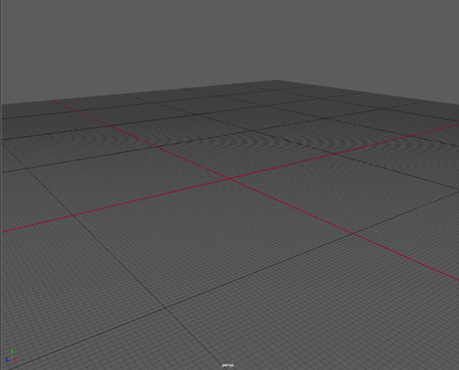
初回のMaya起動と終了
Mayaの設定ファイルを生成するため，念のため一度Mayaを起動して終了する．
デスクトップからMaya【バージョン年】アイコンをダブルクリックする．
起動が終わるまで待つ．
新機能のハイライト設定ウィンドウが表示された場合
OKをクリックする．
Mayaが起動したら一旦Mayaを終了する．
mayaフォルダを自分のストレージにコピーする．
演習室PCのmayaフォルダを自分の個人ストレージかUSBメモリなどにコピーする．
演習室PCのmayaフォルダ
C:\Users\administrator\Documents\maya
以降，上記の演習用ＰＣ内のmayaフォルダは一切使わない．
USBメモリの場合，例えば下図のように保存する．
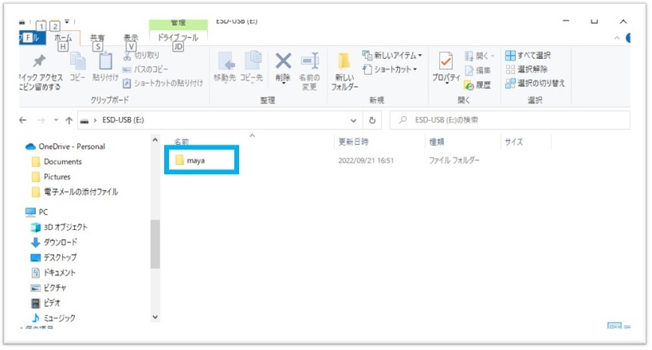
maya起動バッチファイルをダウンロードする．
ブラウザは Microsoft Edge を推奨する．
Teamsホームページからダウンロードする．
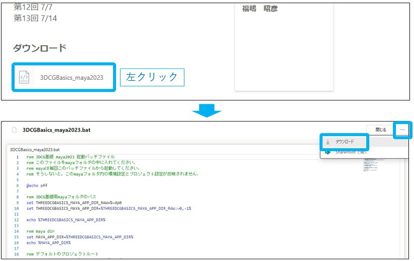
ダウンロードの警告の避け方１
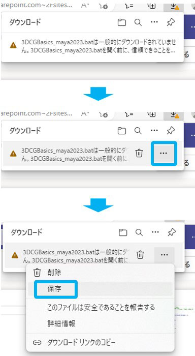
ダウンロードの警告の避け方２
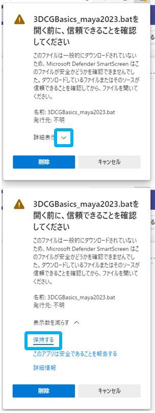
ダウンロードフォルダを開く．
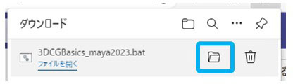
mayaフォルダにバッチファイルを入れる．
USBメモリの場合，例えば下図のようにバッチファイルを入れる（コピーする）．
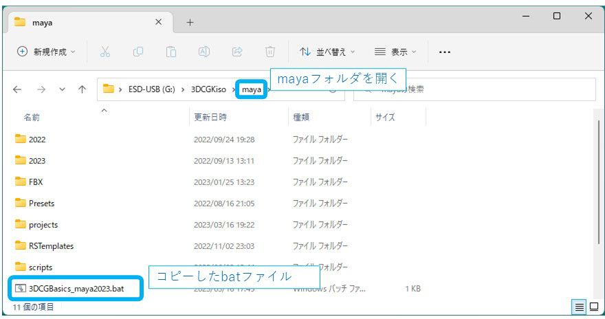
以後，Mayaはバッチファイルから起動する．
なぜバッチファイルから起動するのか
自分のmayaフォルダをMayaへ読み込ませるため．
デスクトップのアイコンやシーンファイルをダブルクリックして起動すると，以下のmayaフォルダから読み込まれてしまう．
C:\Users\administrator\Documents\maya
このフォルダは演習室ＰＣをログアウトすると削除されてしまう． プロジェクト設定やプリファレンスも消えてしまう． これを避けるため，本授業では自分用のmayaフォルダを大学の個人ストレージかUSBメモリなどに保管する．
以降のMaya使用開始時に行うこと
自分のmayaフォルダが入ったメディアをＰＣに接続する．
大学の個人ストレージの場合は，Zドライブなどにマウントされていればよい．
自分のmayaフォルダの中にある「3DCGBasics_mayaXXXX.bat」をダブルクリックしてMayaを起動する．
シーンを変えたいときはMaya上からシーンファイル読み込みを行う．
Maya起動には必ずバッチファイルを使用すること
エクスプローラからシーンファイル（.mb）を直接ダブルクリックしない．
デスクトップのMayaアイコンをダブルクリックして起動しない．
プロジェクト設定
Mayaで扱う様々なファイル（シーンやテクスチャなど）を管理するための行う必要がある．
プロジェクト設定を行うと，さまざまなフォルダ（ディレクトリ構造）が自動で生成される．
メインメニュー
シーンで作業するためのツールやアクションのほぼ全てが含まれている．
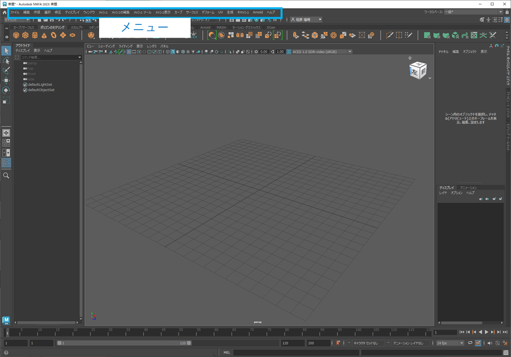
新規にプロジェクトを作成する．
メインメニューから，ファイル > プロジェクトウィンドウ
新規をクリックする．
現在のプロジェクト：3DCGBasics
場所：デフォルトのまま
適用をクリックする．
再生スピードを変更する．
本授業では24fpsでアニメーション作業を行う．
プリファレンスを開く
メインウィンドウ右下のアニメーション プリファレンスをクリックする．
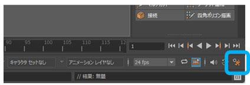
再生スピードを変更する．
プリファレンスの左の列のカテゴリから，設定 > タイムスライダをクリックする．
再生 > 再生スピードを以下に変更する．
再生スピード：24 fps × 1

グリッドを変更する．
魚の詳細なモデリングから，魚が泳げるスペースの作成までがやりやすい大きさに変更する．
ビュー
ビューは，シーン内のオブジェクトを表示する．
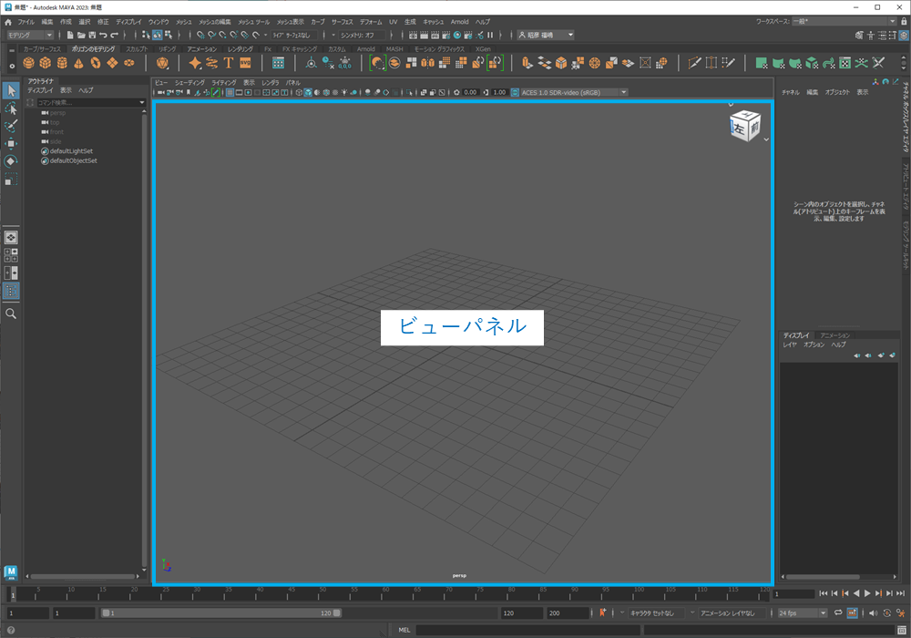
パネルツールバー
ビューパネル上部にあるアイコンの列．
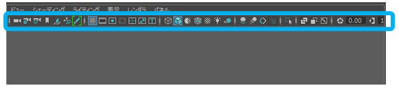
グリッド
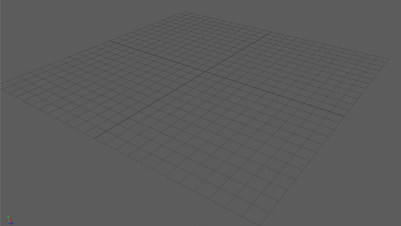
グリッドを変更する．
パネルツールバーから，グリッドアイコンを右クリックし，グリッドオプションをクリックする．
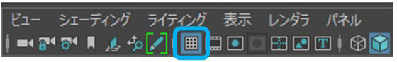
グリッドオプション
長さと幅：200
グリッド全体の範囲
グリッド ラインの間隔：50
主線の間隔
サブディビジョン：50
グリッドをさらに何分割するか．
最も細かい分割線のこと
カラー
グリッド線の種類毎に分かりやすい色を設定するとよい．
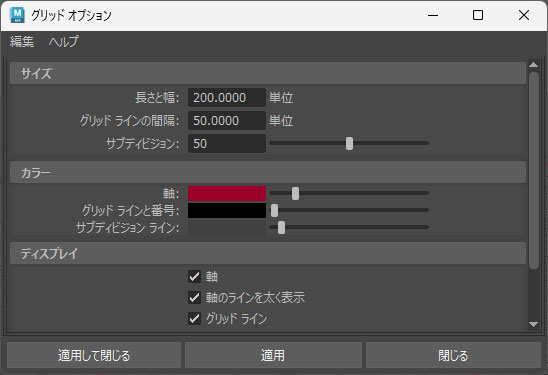
シーンファイルを保存する．
現在のシーンを保存する．
拡張子は.mbとなる．
シーン
シーンとはオブジェクトを含むMayaで作業している空間のこと． Mayaのファイルはシーン単位で保存されている．
シーンの保存
別名でファイルを新規に保存する．
メインメニューから，ファイル > シーンを名前を付けて保存
現在のシーンを上書き保存する．
メインメニューから，ファイル > シーン保存
以下のフォルダにファイルが保存されたことを確認する．
C:\Users\administrator\Documents\maya\projects\3DCGBasics\scenes
演習２：オブジェクトを配置して簡単な魚を作る．
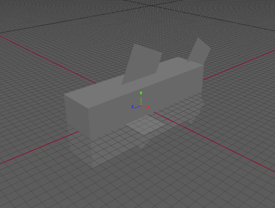
視点操作に慣れる．
いずれの操作も，マウスカーソルをビューの中に置いた状態で有効になる．
視点の回転（Tumble）
Alt + 左ボタンドラッグ パースペクティブビューでのみ使える．
視点の平行移動（Track）
Alt + 中ボタンドラッグ
視点の前後（Dolly）
Alt + 右ボタンドラッグ or ホイールを回す
視点のリセット
AキーもしくはFキー
オブジェクトを見失ったり，ビューが混乱したときに使用する．
胴体オブジェクトを配置する．
魚の胴体となる立方体ポリゴンを１つ配置する．
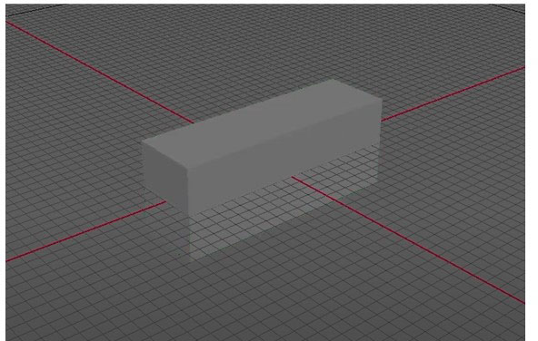
シェルフ
一般的なタスク用のアイコンがここに用意されている，ショートカットのようなもの． タスクのカテゴリ別にタブで分けられている． メニューからドロップダウンリストを開く手間を省くことができる．
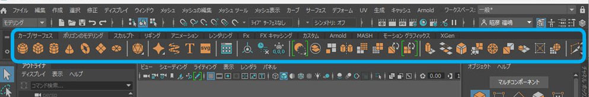
オブジェクト
ビューに表示されるもののことをオブジェクト（Object）という． Mayaにおいて，Polygon，NURBS，ライトやカメラ等は全てオブジェクトの一種．
シーンにポリゴン立方体を追加する．
シェルフ「ポリゴンのモデリング」から，キューブアイコンをダブルクリックする．
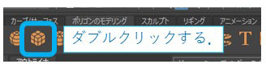
ポリゴンの立方体オプション
幅：6
高さ：8
深度：20
幅の分割数：1
高さの分割数：1
深度の分割数：1
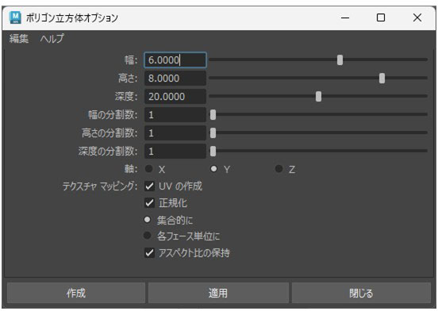
ヒレオブジェクトを配置する．
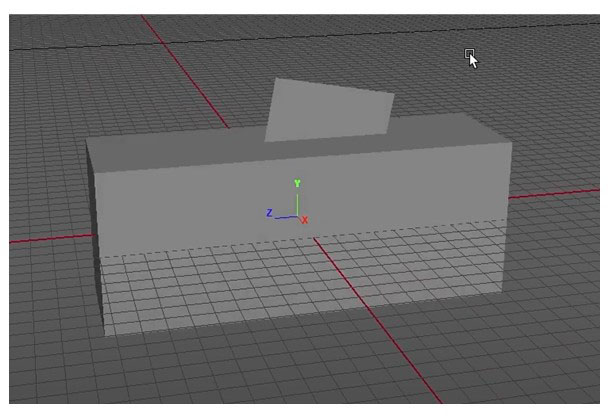
原点軸を表示する．
魚の向きを分かりやすくするため，原点軸を表示するとよい．
メインメニューから，ディスプレイ > ヘッドアップ ディスプレイ > 原点軸
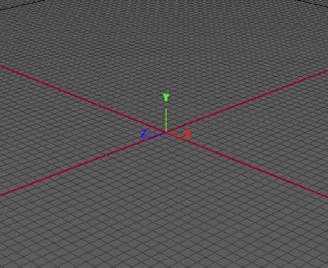
シーンに平面ポリゴンを追加する．
シェルフ「ポリゴンのモデリング」からポリゴンプレーンアイコンをダブルクリックする．
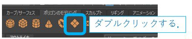
ポリゴンの立方体オプション
幅：4
高さ：4
幅の分割数：2
高さの分割数：2
アウトライナ
シーン内のすべてのオブジェクトが表示されるリスト． ビュー上で選択しにくいものなどはここから選択するとよい．
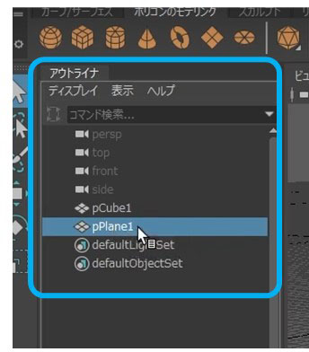
アウトライナからオブジェクトを選択する．
選択されたオブジェクトはビュー上で緑色のアウトラインが表示される．
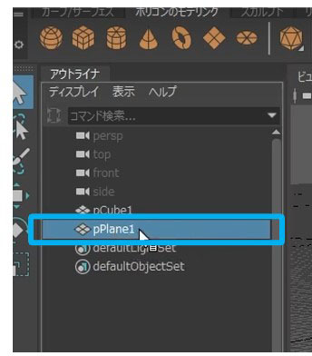
ツールボックス
シーン内のオブジェクトを選択・変換するためのツールが含まれている．
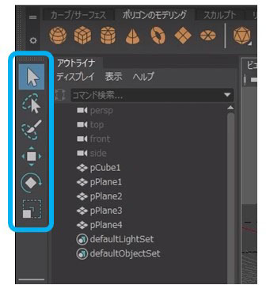
選択ツール
ツールボックスから，「選択ツール」アイコンをクリックする． ビュー上からオブジェクトを選択できるようになる．
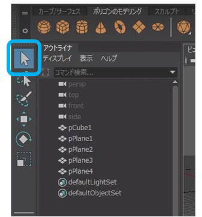
ビューからオブジェクトを選択する
（オブジェクトモード中に）ビュー上のオブジェクトを左クリックする．
移動ツール
「ツールボックス」 > 「移動ツール」をクリックする． 選択されているオブジェクトの原点にマニピュレータハンドルが表示される． このハンドルを左クリックしてドラッグし，オブジェクトを移動する．
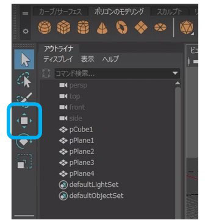
オブジェクトを軸方向にドラッグして移動する．
移動ツールを使用中に，選択オブジェクトに表示されている軸を左クリックしてドラッグする．
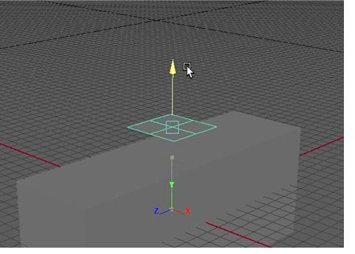
オブジェクトを2軸で移動する．
移動ツールを使用中に，選択オブジェクトの軸周辺に表示されている四角形を左クリックでドラッグする． 対応した面上を移動させることができる．
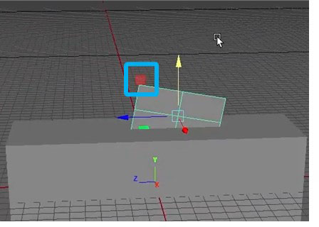
回転ツール
「ツールボックス」 > 「回転ツール」をクリックする．
選択されているオブジェクトの原点に丸いマニピュレータハンドルが表示される．
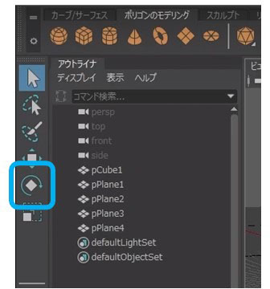
オブジェクトをハンドルで回転する．
このハンドルを左クリックをしてドラッグし，オブジェクトを回転する．
回転させたい方向のハンドルを左クリックしてドラッグし，オブジェクトを回転する．
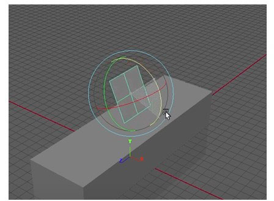
スナップさせながら回転する．
Jキーを押しながらハンドルをドラッグする．
スケールツール
「ツールボックス」 > 「スケールツール」をクリックする． 選択されているオブジェクトの原点にマニピュレータハンドルが表示される．
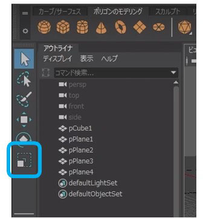
マニピュレータをドラッグして大きさを変える．
大きさを変えたい軸方向のハンドルを左クリックしてドラッグし，オブジェクトの大きさを変更する．
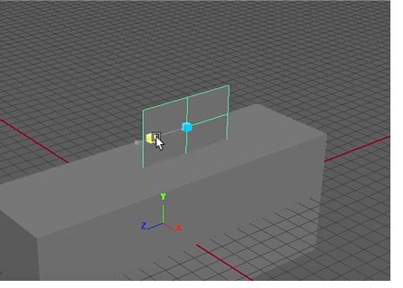
比率を変えずに大きさを変える．
ハンドルの中央をドラッグすると，全体的な比率を変えずに大きさを変更できる．
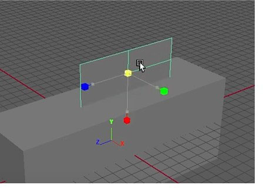
ヒレオブジェクトを４つ配置する．
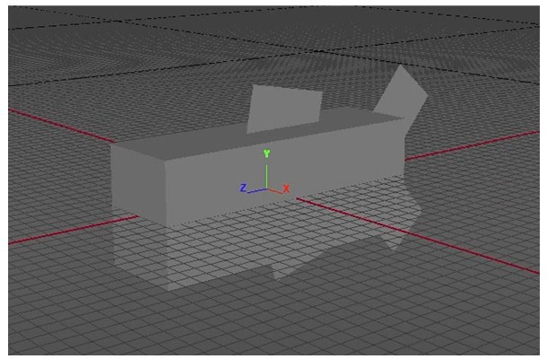
オブジェクトを移動して複製する．
Shiftキーを押しながら移動ツールで移動させる．
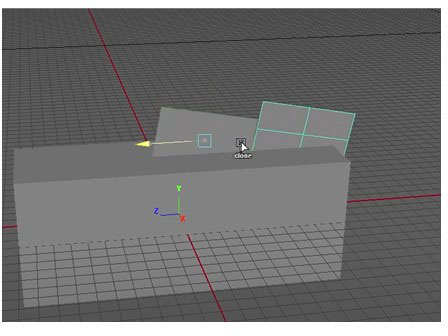
オブジェクトを削除する
オブジェクトが選択された状態で，DelキーまたはBack Spaceキーを押すと，選択されているオブジェクトがシーンから削除される．
平面ポリゴンの裏にもライトを当てる．
ビューパネルから，ライティング > 両面ライティングをONにする．
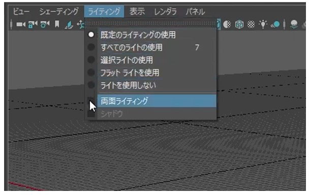
演習３：魚オブジェクトにマテリアルを適用する．
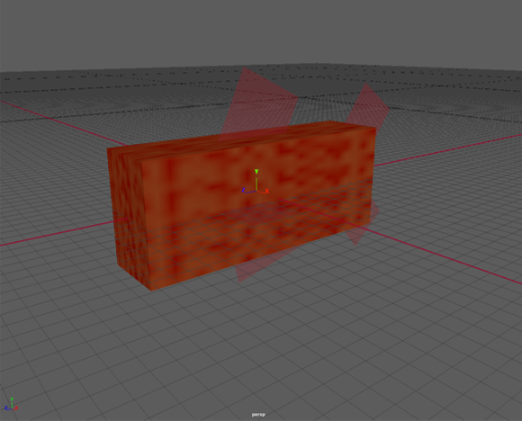
胴体マテリアルを作成する．
ステータスライン
一般的に使用されるコマンド用のアイコンがここに用意されている．
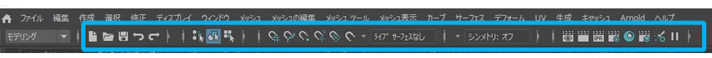
例えば以下のようなもの
ファイルの保存関連
オブジェクトの選択，スナップ
レンダリング関連
アイコンのグループを展開または折りたたむには、垂直の分割線をクリックする．
ハイパーシェードウィンドウ
オブジェクトの色や質感を決定するウィンドウ．
開き方
ステータスライン から，水色の円のようなアイコンをクリックする．
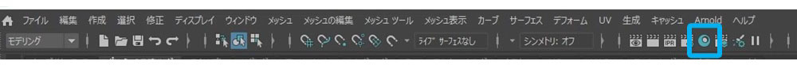
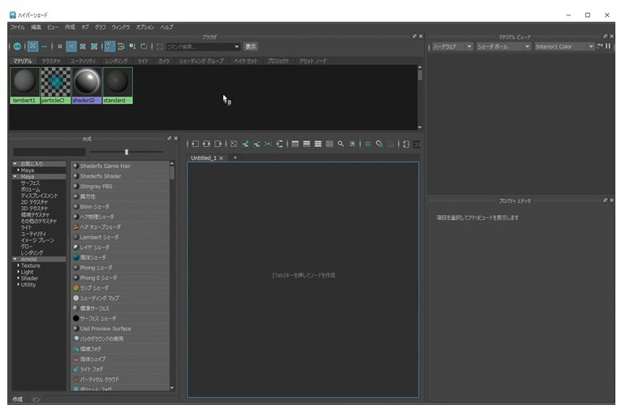
Blinnマテリアルを作成する．
ハイパーシェードウィンドウから行う．
左下の「作成」のエリア内から，「サーフェス」をクリックする．
丸いアイコン付きのシェーダーのリストが表示される．
リスト内の「Blinn シェーダ」をクリックする．
上部の「マテリアル」エリア内に新しく作成されたBlinnマテリアルのアイコンが表示される．
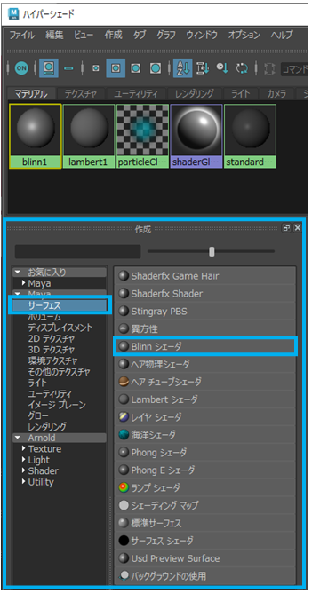
胴体マテリアルのカラーを変更する．
マテリアルの色を変更する．
ハイパーシェードウィンドウから行う．
色を変更するマテリアルのアイコンをクリックする．
右下プロパティエディタ内の Common Material Properties > Color の横にあるグレーの長方形をダブルクリックする．
カラーエディタが開く．
カラーエディタを使い，任意の色を作成する．
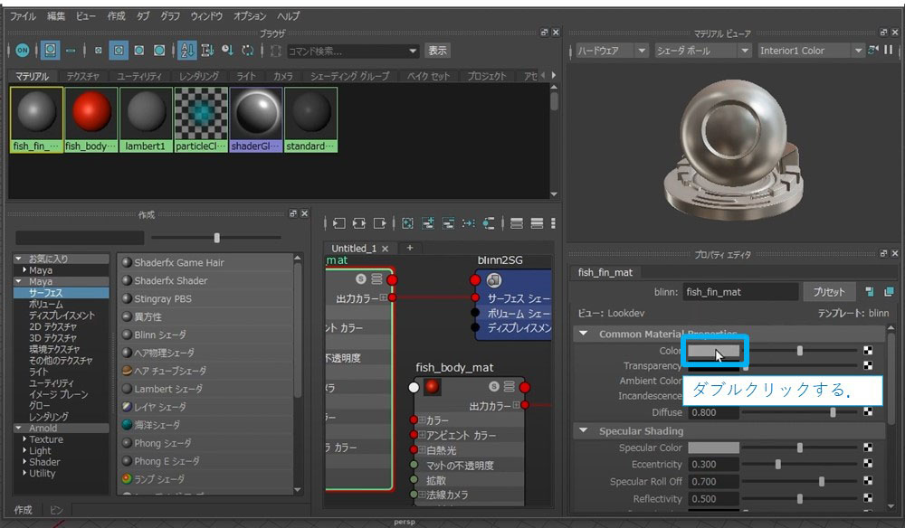
カラーエディタ
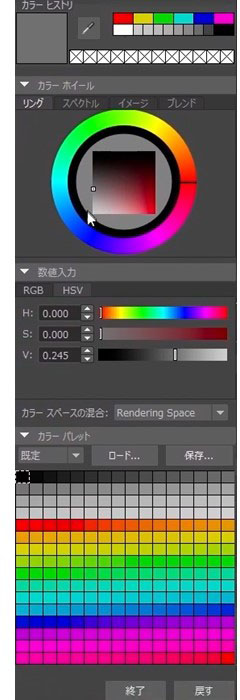
胴体マテリアルをポリゴンに適用する．
マテリアルをオブジェクトに割り当てる．
マテリアルをオブジェクトに反映するには，マテリアルをオブジェクトに割り当てる必要がある．
ハイパーシェードウィンドウを開き，割り当てるマテリアルのアイコンを探す．
マテリアルのアイコンを中ボタンでドラッグし，ビュー上のオブジェクトの上で離す．
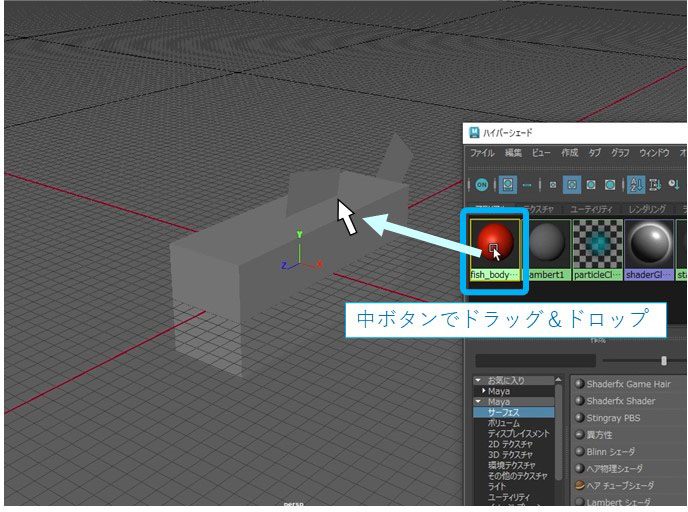
ヒレマテリアルを作成して適用する．
ヒレ用にマテリアルを別に一つ作成し，全てのヒレポリゴンに適用する．
胴体とは異なる色にすること．
胴体マテリアルのテクスチャを作成する．
ここでは簡易的にプロシージャルテクスチャを用いる．
プロシージャルテクスチャを作成する．
ハイパーシェードウィンドウから行う．
左下の「作成」のエリア内から，「2D テクスチャ」をクリックする．
丸いアイコン付きのテクスチャのリストが表示される．
リスト内の任意のアイコンをクリックする．
ここでは「ノイズ」を用いた例を紹介する．
上部の「テクスチャ」エリア内に新しく作成されたテクスチャのアイコンが表示される．
テクスチャを選択し，プロパティエディタ内のアトリビュートを編集することで，色やパターンをアレンジすることができる．
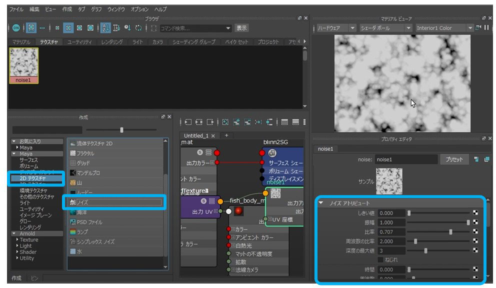
マテリアルにテクスチャを割り当てる．
テクスチャはマテリアルに適用する必要がある．
ハイパーシェードウィンドウから行う．
マテリアルを選択する．
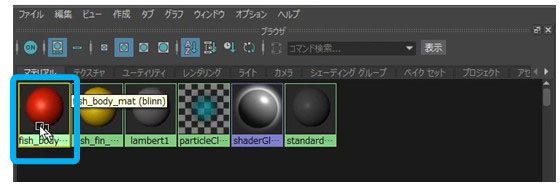
タブを「テクスチャ」に切り替える．
テクスチャアイコンを中ボタンでクリックし，プロパティエディタ内の「Color」の領域へドラッグ＆ドロップする．
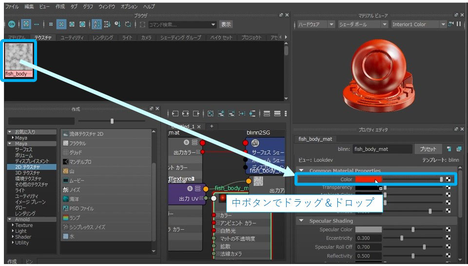
ビュー上でテクスチャを描画する．
Mayaのデフォルトの設定ではビュー上でテクスチャが描画されないはず．
パネルツールバーのテクスチャアイコンを押すたびに，テクスチャ表示のON・OFFが切り替わる．
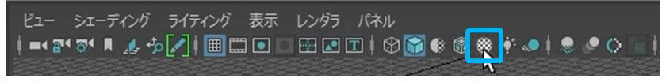
演習４：魚オブジェクトの移動アニメーションを作成する．
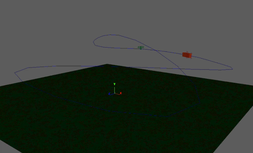
魚の移動軌跡を作る．
モーションパスを作成する．
クセが強いので慣れが必要．
シェルフ「カーブ／サーフェス」から，EPカーブツール アイコンをクリックする．
EP カーブツールでカーブを作成する．
ビュー上でポイントを置きたい場所を左クリックする．
Enterキーを押して作成を終了する．
移動・回転・スケールツールで大まかな配置を行う．
選択モードをCVに変更する
カーブ上で右クリック長押し後ドラッグし，CVで離す．
移動ツールでCVの座標を編集する．
選択モードを（オブジェクトモードへ）戻す．
魚オブジェクトをグループ化する
グループ名：fish_motion
オブジェクトをグループ化する．
全ての魚ポリゴンを選択する．
メインメニューから，編集 > グループ化します
グループ名を変更する．
魚をモーションパスへ乗せる．
オブジェクトをモーションパスにアタッチする．
カーブを選択する．
（オブジェクト）グループを追加選択する．
Ctrlキーを押しながらクリックする．メインメニューをアニメーションに変更する．
メインメニューから，コンソトレイント > モーション パス > モーション パスにアタッチのオプション
オプション項目
フロント軸：Z
フロント方向を反転：魚の向きが逆になってしまった場合，チェックを入れる．
アタッチをクリックする．
オブジェクトをモーションパスからデタッチする．（外す）
オブジェクトを選択する．
メインメニューから，編集 > 種類ごとに削除 > モーション パス
シーンのアニメーションを再生する．
アニメーションを再生する．
メインウィンドウ右下の再生アイコンをクリックする．
演習５：レンダリングして動画ファイルを書き出す．
作例
水底を作る．
グリッドと同じ大きさのポリゴンプレーンをシーンに追加する．
マテリアルはLambertシェーダを用いる．
サーフェス > lambert シェーダ
テクスチャは「山」を用いる．
2D テクスチャ > 山
自分なりに作ってみる．
シーンに平行光源を配置する．
シーンにディレクショナル ライトを追加する．
シェルフの「レンダリング」タブをクリックする．
「ディレクショナル ライト」アイコンをクリックする．
移動ツールや回転ツールを使ってライトの位置や向きを調整する．
アトリビュートエディタ
オブジェクトを選択するとそのオブジェクトのもつ様々なアトリビュート（属性）がここに表示される．
ビュー内のアイコンの大きさを変える．
ライトやカメラなどのロケータ（ビュー内でのアイコン）の大きさは変更することができる．
ライトもしくはカメラオブジェクトを選択する．
アトリビュートエディタから，オブジェクト ディスプレイ > ロケータ のスケール
値を入力する．
デフォルト値：1.000
下図はライトの例
ビューにライトを反映させる．
パネルツールバーのライトのアイコンを押すたびに，ライトのON・OFFが切り替わる．
ビューにドロップシャドウ（影）を表示する．
パネルツールバーのシャドウのアイコンを押すたびに，シャドウのON・OFFが切り替わる．
ライトやシャドウの明るさを調整する．
ライトを選択する．
アトリビュートエディタから，directionalLight タブを開く．
カラー：ライトの色
カラーピッカーから好みの色を設定する．
強度：照明の強度（明るさ）
基本的な明るさはこの値で調整するとよい．
シャドウカラー：ドロップシャドウの色
カラーピッカーから好みの色を設定する．
反映されない場合，ビューのシャドウ表示をいったんOFFにし，再度ONにしてみる．
光が当たらない部分のカラーを調整する．
ポリゴンオブジェクトかマテリアルを選択する．
アトリビュートエディタから，マテリアルのタブを開く．
共通マテリアル アトリビュート > アンビエントカラー
シーンにカメラを配置する．
シーンにカメラを追加する．
シェルフから，カメラを作成アイコンをクリックする．
ライト同様，移動・回転ツールで適当な場所へ配置する．
カメラから見たビューに切り替える．
ビューパネルメニューから，パネル > パース ビュー > camera~
パースペクティブビューに戻す場合は persp
カメラビューで視点を操作すると，カメラの位置・回転も更新されることに注意．
カメラでオブジェクトを視界内にとらえる．
カメラは定点のまま，オブジェクトを追う．
カメラを選択する．
アトリビュートエディタから，cameraタブへ切り替える．
カメラアトリビュート > コントロール：カメラおよびエイムへ切り替える．
カメラオブジェクトが自動的にグループ化される．
camera1_group など
カメラグループ内に生成されたロケータオブジェクト（***_aim）を追従したいオブジェクトのグループに移動させる．
アウトライナで操作する．
ロケータオブジェクト（***_aim）を選択し，移動ツールで魚ポリゴンの位置まで移動させる．
カメラでオブジェクトを視界内にとらえるモードを止める
カメラを選択する．
アトリビュートエディタから，cameraタブへ切り替える．
カメラアトリビュート > コントロール：カメラへ切り替える．
動画を書き出す．
レンダー設定（第１回授業用）
レンダー設定を開く
ステータスラインから，下図のフィルム＆歯車アイコンをクリックする．
使用するレンダラ：Maya ハードウェア2.0
レンダー設定
カラー管理
出力変換をレンダラに適用：ON
変換タイプ：ビュー変換
ファイル出力
イメージフォーマット：AVI
圧縮：Microsoft Video 1
圧縮の品質：100
フレームレンジ
開始フレーム：1
終了フレーム：120
レンダリング可能なカメラ：camera*
イメージサイズ
プリセット：HD720
レンダーオプション
既定のライトの有効化：OFF
Maya Hardware 2.0（下図の右）
透明度のアルゴリズム：深度ピーリング
バッチレンダーでレンダリングを開始する．
シェルフ「レンダリング」のバッチレンダーアイコンをクリックする．レンダリングが終わるまで待つ．
下図のメッセージが表示されたら終了．
動画ファイルを確認する． 下図のフォルダにファイルが作成される．
動画を確認する．
ウィンドウズメディアプレイヤー（wmp）やVLCプレイヤーを使う．
次回までの準備：作りたい魚の画像を用意
第２回授業までに，作りたい魚の参考画像を用意しておく．
下図は本授業の例のネオンテトラ
条件
左向きに加工して置く．
Photoshop でもペイントでも構わないので，右向きの物や上下に傾いているものは加工をしておく．
最低でもサイドビューの画像１枚．
出来ればいろいろな角度から見た参考画像も複数．
授業時間中にYoutubeなどで動画を参考にしてもよい．
見栄えも考慮に入れる
透明感のあるヒレ
鮮やかな色彩
アニメーション映え
この魚を元に７回までの授業を行うので慎重に選ぶ．
第２回：魚のモデリング（胴体とヒレ）
演習１：下絵を読み込む．
下絵の準備
用意した下絵画像を以下のフォルダにコピーする．
maya > projects > 3DCGBasics > sourceimages
Mayaで作成したものを様々な角度から見れる基本となるビュー． 視点の回転を行うことができる．
下絵の挿入
ここからやMayaの操作になる．
魚の写真を下絵としてMayaに取り込む． 取り込んだ後のイメージビューをレイヤー化し，モデリングの邪魔にならないように選択不可にする．
スプリットビュー
複数のビューを切り替えるためのビュー． 下図はモデリング中のスプリットビューの例
ビューを切り替える．
スプリットビューに切り替える．
ビュー上で
Spaceキーを押す．
目的のビューへ切り替える．
分かれたビューの上でSpaceを押す
ビューの種類
パースペクティブビュー
シーンを俯瞰するデフォルトのビュー．
カメラの回転ができる．
投影方法：透視投影（Perspective）
side, front, top
側面図，正面図，上面図のビュー
投影方法：平行投影（Orthographic）
イメージプレーンの読み込み
ビューを「side-X」ビューに切り替える．
メニューから，ビュー > イメージプレーン > イメージプレーンの読み込み．
side-Xビューに下図のようにイメージプレーンが表示される．
イメージプレーンプレーンを調整する．
大きさの調整
グリッドを参考に写真の被写体の魚の大きさを実際の（だいたいの）大きさに拡大縮小する．
スケールツールを使い，中心ハンドルか青色のハンドルをドラッグする．
位置の調整
perspビューに切り替える．
移動ツールを使ってイメージプレーンをXマイナス方向へ移動し，モデリングする空間を確保する．
イメージプレーンを選択不可にする．
作業の邪魔にならないようイメージプレーンを選択できないようにする．
イメージプレーンを選択する．
チャンネルボックス／レイヤ エディタから，ディスプレイ > レイヤ
選択項目からレイヤを作成 を選択する．
レイヤの三つ目のアイコンをクリックし，「R」へ切り替える．
それでもが選択できてしまう場合．
アトリビュートエディタから，以下の部分にチェックが入ってしまっていないか確認する．
演習２：魚のモデリング（胴体）
体用のポリゴン立方体を作成する．
魚の大まかな大きさを元にオプションを設定する． 分割数は下図の通りに設定する．
シーンにポリゴン立方体が追加される．
ワイヤーフレーム表示にする．
ビューのパネルメニューから，ワイヤーフレームアイコンをクリックする．
ワイヤーフレーム表示（side-X）
スムースシェード表示にする．
通常の表示に戻る場合はこちらから．
ビューのパネルメニューから，ワイヤーフレームアイコンをクリックする．
スムースシェード表示（side-X）
ポリゴン立方体の大きさを大まかに調整する．
ビューをside-Xに切り替える．
ワイヤーフレーム表示に切り替える．
移動ツールやスケールツールを使い，ポリゴン立方体の高さと深度（長さ）をスケールで調整する．
上下は背びれの付け根～腹まで
前後は首～尾ひれの付け根まで
ビューをperspに切り替える．
スケールツールを使い，ポリゴン立方体の幅をスケールツールで調整する． 魚の幅は写真資料が少ないので，適当な幅にする．
横から見た輪郭を作る．
主に頂点を操作する．
コンポーネントとは
コンポーネントとはメッシュを構成する頂点，エッジ，フェースのこと．
選択モードを変更する．
コンポーネントは選択モードを変更すると選択できるようになる．（デフォルトはオブジェクト モード）
メッシュの上で右クリックを長押しし，頂点，エッジ，フェースいずれかの上までドラッグして離す．
頂点を一列ずつ輪郭にフィットさせる．
頂点選択モードに切り替える．
頂点を１列範囲選択する．（side-X）
スケール／移動ツールを使い分け，下絵の魚の輪郭にフィットさせる．
上記を繰り返して全ての頂点列をフィットさせる．
体の丸みを作る．
エッジループを選択する．
エッジループとは，リング状につながった複数のエッジのこと．
選択モードをエッジに変更後，エッジをダブルクリックすると選択できる．
体の横の丸みを作る．
エッジループを選択する．
スケールツールでX軸のハンドルをドラッグする．
以上を繰り返す．
シンメトリ編集
左右対称に頂点を編集する方法
ウィンドウ右側の横倒しのタブ「モデリング ツールキット」を開く．
シンメトリの軸を「オブジェクトX」へ変更する．
コンポーネントをスライドさせる．
コンポーネントを単純に移動させるとメッシュが崩れることがある． 下の動画では端のエッジがと隣接するエッジを通り過ぎてしまっている．
スライドを使うとこのような破綻を防ぐことができる． 下の動画はスライド移動を使った例
スライド移動のやり方
コンポーネントを選択する．
Shift+Ctrlを押しながら移動ツールで移動させる．
背と腹の丸みを作る．
背の際のエッジループを選択する． リング状にはならないはずだが，問題ない．
移動ツールでX軸のハンドルをスライドする．
同じように腹の際のエッジループも処理する．
中間の縦のエッジリングはスケールツールを使う．
体のくびれを作る．
シンメトリをオフにしないとうまくいかないので注意．
シンメトリをオフにする．
体の横周りのエッジループを選択する．
スケールツールでX軸のハンドルをドラッグする．
顔と尾ひれの断面以外は上記の繰り返し．
顔と尾ひれの断面は以下の方法で行う．
ビューをside-Xに切り替える．
頂点選択モードで顔の断面の頂点を全て選択する．
ビューをperspに切り替える．
スケールツールでX軸のハンドルをドラッグする．
尾ヒレの断面も以上の処理を繰り返す．
ディティールを調整する．
もちろんコンポーネントは一つ一つ移動させたりすることもできる．
メッシュが破綻しないよう，慎重に行う必要がある．
ペイント選択ツール
広い範囲のコンポーネント選択に便利
必須ではない．
ペースト選択ツールに切り替える．
ウィンドウ左側「ツールボックス」の上から３番目のアイコンを左クリックする． コンポーネントをドラッグして連続的に選択することができるツール．
初回のツール設定
デフォルトの設定は直観的ではないので，以下の設定の変更を薦める．
ペイント選択ツールアイコンをダブルクリックする．
ツール設定から，ペイント操作 > ぜんざいの設定項目の追加のチェックを外す．
ペイントの太さを変える．
メッシュ上でキーBを押しながら左ボタンでドラッグする．
使い方
ペイント選択は複数のフェース（面）選択に向いている．
フェース選択モードに切り替える．
ペイント選択ツールを使い，左ボタンドラッグをして複数のフェースを選択する．
移動／スケールツールに切り替え，選択範囲を編集する．
シンメトリのエラー修正
下図のようにシンメトリを崩してしまった場合の対処法．
ポリゴンのミラー
メッシュをオブジェクト選択する．
メインメニューから，メッシュ > ミラー のオプション．
ミラー のオプション エラーの箇所によってミラー方向を変更する．
ミラー をクリックして実行する．
うまくいかない場合，マージのしきい値を大きくしてみる．
メッシュのエラー
下図のようなポリゴンのねじれ／絡まり
修正方法
メッシュをオブジェクト選択する．
メインメニューから，メッシュの編集 > マージ のオプション
マージ のオプション
しきい値：0.01～0.1程度
値を大きくするほどより広い範囲の頂点がくっついて１つに統合される．
試行錯誤し，うまく頂点が統合されるように値を調整する．
不要なフェース（ラミナフェース）
同じフェースが同じ個所に複数重なってしまっている状態． ラミナフェースともいう．
下図のように，ラミナフェースの周辺のエッジを動かすと不要なフェースが現れる．
修正方法
メッシュをオブジェクト選択する．
メインメニューから，メッシュ > クリーンアップ のオプション
クリーンアップ のオプション
操作：一致するポリゴンのクリーンアップ
ラミナ フェース（すべてのエッジを共有するフェース）
演習３：魚のモデリング（ヒレ）
ヒレを配置する．
背ビレ
尾ビレ
腹ビレ
尻ビレ
胸ヒレ（片側だけ作成）
ポリゴン プレーンの作成 オプション
分割数：2
軸：X
作成されたポリゴンプレーン
スケール／移動ツールで大まかに配置する．
頂点モードでアウトラインを作る．
ヒレの詳細度を上げる．
ヒレのメッシュの分割を後から増やすことができる．
エッジループを挿入する．
モデリングツールキットから，マルチカットをクリックする．
エッジ上で
Ctrlを押したまま左クリックする．10%毎にスナップしながらエッジループを挿入する場合：
Ctrl+Shift+ 左クリックエッジの中央にエッジループを挿入する場合：
Ctrl+ 中ボタンクリック
胸ヒレを左右対称に複製する．
トランスフォームのフリーズ
ポリゴンオブジェクトのシーン上での見た目はそのままトランスフォームを0にする．
トランスフォームとは移動／回転／スケールツールによる変形のこと．
オブジェクトを選択する．
シェルフ「ポリゴンのモデリング」から，「トランスフォームのフリーズ」アイコンをクリックする．
トランスフォームの移動・回転・スケールがリセットされる．
シーンにおける見た目は変わらない．
ピボットモードに切り替える．
ピボットとは
オブジェクトの移動，回転，拡大縮小の中心点
ピボットは基本的にはオブジェクトの中心に置く．
移動ツールに切り替え，オブジェクトを選択する．
Dキーを押す．もう一度
Dキーを押すとピボットモードを抜ける．
ピボットをスナップ移動する．
移動ツールに切り替え，オブジェクトを選択する．
Dキーを押してピボットモードに切り替える．Xキーを押しながらハンドルをドラッグする．
ピボットをオブジェクトの中心に移動する．
オブジェクトを選択し，移動ツール等に切り替える．
シェルフ「ポリゴンのモデリング」から，「中央にピボットポイントを移動」アイコンをクリックする．
胸ヒレをミラー複製する．
胸ヒレオブジェクトをオブジェクト選択する．
トランスフォームのフリーズを実行する．
Dキーを押してピボットモードに切り替える．ピボットのX軸のハンドルをスナップ移動し，魚の中心軸上（X値：0）の位置へ移動する．
Xキーを押しながらハンドルをドラッグする．複製する（
Ctrl+Dキー）複製されたオブジェクトが選択された状態になる．
チャンネルボックスから，スケール Xの値をを
-1に書き換える．トランスフォームのフリーズを実行する．
２つの胸ヒレオブジェクトのピボットをオブジェクトの中心に移動する．
第３回：魚のモデリング（頭部）
演習１：魚のモデリング（顔）
頭を作る．
フェースを分かりやすくする．
オブジェクトを選択
アトリビュートエディタから，メッシュ コンポーネント ディスプレイ
センターの表示：ON
境界の表示にチェックを入れる．
境界幅：2.000程度
押し出すフェースを選択する．
押し出すフェースを選択する．
モデリング ツールキットから，コンポーネント > 押し出し をクリックする．
マニピュレータを移動する．
頭部にエッジループを追加する．
頭部のエッジが足りないはずなので，エッジループを追加する．
上アゴと下アゴを作る
さらに押し出しを行う．
上アゴ用のフェース選択
上アゴを押し出す．
下アゴ用のフェース選択
下アゴを押し出す．
各アゴの先端をスケールし，大きさを整える．
口角を作る．
顎の境目の２つの頂点を選択する．
シンメトリを有効にしてどちらかの頂点を選択する．
頂点を移動する．
口を作る．
口の中のフェースを選択する．
押し出しをクリックする．
マニピュレータは使わない．
スケールツールに切り替える．
スケールのマニピュレータの中心をドラッグして厚みを作る．
押し出しをクリックする．
マニピュレータは使わない．
移動ツールに切り替える．
移動ツールのZ軸マニピュレータをドラッグして口の中の面を奥に移動する．
移動／回転／スケールツールを使い分け，口内の空間を作る．
演習２：魚のモデリング（目）
半球を作成して配置する．
ポリゴン球を作成する．
下図のように分割数：16，軸：X
移動／スケールツールで大まかに位置と大きさを整える．
球の半分を選択する．
シンメトリをオフにしてフェース選択．
Deleteキーで削除する．side-Xビューで下絵を元に位置と大きさを調整する．
front-Zビューで縦のエッジループを編集して目の形を作る．
移動／スケールツールなどを使う．
移動／回転ツールで最後の調整を行う．
眼を設置する面を作る．
胴体と眼のポリゴン境目に面を作り，境界がより自然な見た目になるよう整える．
オブジェクトを非表示にする．
1 つまたは複数のオブジェクトを選択し、Hキーを押す．
非表示にしたオブジェクトを表示する．
アウトライナでオブジェクトを選択し、再度Hキーを押す．
頂点の面取り．
頂点を選択する．
メインメニューから，メッシュの編集 > 頂点の面取り
眼を設置するフェースを作る．
シンメトリ オブジェクトX
side-Xビューで胴体のメッシュ上の頂点を１つ眼の中心へスライド&移動する．
適当な頂点が無ければ，必要に応じてエッジループを追加する．
隣接するエッジループが眼ポリゴンと重なっている場合，外側にスライドさせる．
ステップ1で移動させた頂点を選択し，頂点の面取りを実行する．
眼の設置フェースを広げる．
フェースを分割する．
モデリングツールキットから，マルチカットをクリックする．
分割したいフェースに属する頂点かエッジを２か所左クリックする．
Enterキーで確定する．
眼の設置フェースを広げる．
新たに作られた４つの頂点を目ポリゴンの外側までスライド&移動する．
眼ポリゴンの16角形の対角頂点の少し外側に配置する．
周辺のエッジを整える．
頂点選択モードでスライドを使う．
周辺の４つの五角形フェースを四角形に分割する．
新しくできた４つの頂点をスライド＆移動し，中心に八角形を作る．
八角形を４つの四角形に分割する．
作例
マブタを成形する．
眼の周辺のメッシュを編集しやすくなっている．
移動設定
全ては紹介しないが，分かりやすく便利な２つを紹介する．
ワールド
オブジェクトやコンポーネントの角度に関係なく水平垂直に動かすことができる．
法線
メッシュの面（フェース）が向いている方向に動かすことができる． 黄色いマニピュレータを使用するとよい．
形状を膨らませたい際などに便利．
眼の周辺を成形する．
片方の眼ポリゴンオブジェクトを非表示にすると作業がしやすい．
移動設定を法線にする．
マブタのような起伏を眼ポリゴンとのバランスを見ながら成形する．
作例
眼をミラー複製する．
胸ヒレをミラー複製するを参考に眼をミラー複製する．
演習３：魚のモデリング（仕上げ）
メッシュオブジェクトに名前をつける．
アウトライナから，各オブジェクトに名前を付ける． 以下，命名例
fish_bodyfish_fin_topfish_fin_tailfish_fin_backfish_fin_bottomfish_fin_chest_lfish_fin_chest_rfish_eye_lfish_eye_r
胴体の分割を増やす．
現状のメッシュで魚の形状が十分に表現できていない場合，エッジループを追加するなどして形状を複雑化させる．
※必須ではない．
メッシュを整える．
モデリングの仕上げにスムーズか削減を行うとメッシュが整えられる．
処理の結果，好ましくない結果になるようなら実行する必要はない．
※推奨だが必須ではない．
メッシュのスムーズ
ポリゴン全体を整えつつ，分割数を増やすことができる．
オブジェクトを選択する．
シェルフから，メッシュ > スムーズ
メッシュの削減
メッシュのスムーズとは逆に，分割数を減らす．
オブジェクトを選択する．
シェルフから，メッシュ > 削減
第４回：魚のUV作成
演習１：体のUVを自動作成する．
UV作業環境の確認
UVとは
ポリゴンとテクスチャの対応を決める情報のこと．
X,Yではなく，U,Vの座標軸がある．
UVエディタ
開き方
エディタのおすすめ配置位置
UVツールキット
開き方
UVエディタのメニューから，ツール > UVツールキットを表示
体のUVを作成する．
UVを自動作成する．
最初にざっくりとしたUVを作成する．
魚の体のオブジェクトを選択する．
UVエディタを開く
UVエディタのメニューから，作成 > 自動
演習２：体のUVを半身に開く．
一旦全てのUVをカットする．
UVシェル
繋がったUVのカタマリのこと．
UVシェル選択モード
UVエディタのビュー上で，右クリック長押し > UVシェル
全てのUVをエッジで切り離す．
おそらく縫合がチグハグなので，一度全て切り離す．
UVエディタで全てのUVシェルを選択する．
選択されたUVシェルはオレンジ色で表示される．
UVエディタメニューから，カット/縫合 > カット
正中線以外を縫合する．
魚の中心を通るエッジループを選択する．
選択モードを「エッジ」へ変更する．
ビュー上で魚の中心を通るエッジループを選択する．
ダブルクリックでエッジループが選択できない場合，
Shiftキーを押しながらエッジをひとつずつ追加選択する．
選択範囲を反転する．
選択範囲を反転し，魚の中心を通るエッジループ以外を選択する．
UVエディタのメニューから，選択 > 反転
反転後の選択範囲
魚の中心のエッジループ以外を縫合する．
UVエディタのメニューから，カット/縫合 > 移動して縫合
縫合後
※うまく２つのUVシェルにきれいに分かれなかった場合，メッシュのマージを試してみる．
参考：メッシュエラーの修正
UVを展開する．
UVを展開することで，多少歪みを整えることができる．
UVシェル選択モードでUVシェルを全て選択する．
UVエディタメニューから，修正 > 展開 のオプションを開く
UVの展開オプション
反復：8
適用して閉じる．
※以降は上記のオプション設定の手順は必要なくなる． 下のように「展開」をクリックすればよい．
半身のUVをシンメトリ化する．
UVをシンメトリ化する．
移動ツールを使用してUV0～1のマスの中にUVシェルを収める．
２つのUVシェルを選択する．
UVエディタメニューから，ツール > シンメトリ化 をクリックする．
UVの縦に伸びているエッジを１つ選択する．
ミラー軸をU：0.5の位置へ移動する．
Ctrl+ 中マウスボタンを押しながらドラッグする．ブラシで反転軸の反対へ移動させるUV上をドラッグする．
修正したい側のＵＶをなぞる．
口の中のUVを分ける．
余裕がある人向けで必須ではない．
ビューから，口周りのエッジループを選択する．
UVエディタメニューから，カット/縫合 > カット
口のUVシェルが正しく分割されたことを確認する．
口のUVシェルを離れた場所に移動させる．
口のUVシェルをカットする．
UVエディタメニューから，カット/縫合 > カット
ビュー上で口周りのエッジループを再度選択する．
選択を反転する．
UVエディタのビューから，
shift+ 左ボタンを押したままドラッグし，口のUVシェル全体を範囲選択する．UVエディタのメニューから，カット/縫合 > 移動して縫合
UVエディタメニューから，修正 > 展開
演習３：眼のUVを作成する．
基本的には演習２と同様の流れで作成する．
眼UVの縫い合わせ
下図のオレンジ色のエッジループ以外を縫い合わせる．
眼UVの展開
シンメトリの処理は必要ない． 両目とも下図のようにできればよい．
演習４：ヒレのUVを作成する．
基本的には演習２と同様の流れで作成する．
分割や縫合が不要なはずなので，かなり容易に作成できる．
向きをある程度整える．
UVを作成した直後はUVシェルの向きがバラバラなはずなので，回転ツールである程度整える．
演習５：UVをレイアウトする．
テクセルの調整
UVチェッカーを表示する．
UVエディタのメニューから，「チェッカマップ」アイコンをクリックする．
テクセルを設定する．
テクセルとは，サーフェス上のテクスチャの密度のこと．
pixel / 単位（cm）
体と目，ヒレのテクセル密度をできるだけ揃える必要がある．
魚のオブジェクトを全て選択する．
UVエディタから，UVシェルを全て選択する．
UVツールキットから，トランスフォーム > テクセル密度
マップサイズ：1024
テクセル密度：魚の体がテクスチャをはみ出さない程度に大きく調整する．
セット をクリックする．
テクセル密度が揃った様子
UVシェルの向きを整える．
後に行う自動レイアウトでは回転を行わないため，事前にUVシェルの向きを整える．
UVシェルの向きを揃える．
各UVシェルを適切な角度に回転させる．
エッジを選択する．
UVツールキットから，配置してレイアウト > エッジの方向
ヒレのUVシェルの向きを整える．
眼のUVシェルの向きを整える．
眼にも上下があるので，正しい向きに調整する． ビューで上向きのエッジを選択し，UVシェルの回転を行うとよい．
UVを自動レイアウトする．
全てのUVシェルをUV0～１のマスの中に収める必要がある．
手作業でUVをレイアウトすることもできるが，1クリックで自動レイアウトを行うこともできる．
レイアウト
魚のオブジェクトを全て選択する．
UVエディタから，UVシェルを全て選択する．
UVツールキットから，配置してレイアウト > レイアウト を
Shift+ 左クリックシェルの事前スケール：オフ
シェルを回転：オフ
シェルのパディング：10程度
タイルのパディング：10程度
スケール モード：オフ
UVレイアウト をクリックする．
以降はオプションの設定手順は不要なのでレイアウトボタンをクリックする．
シンメトリUVを重ねる
眼のUVシェル重ねることが可能．
2つのUVシェルを選択する．
UVツールキットから，配置してレイアウト > 類似したものをスタック
手作業で微修正を行う．
２つの胸ヒレのUVシェルを近くに並べるなど．
UVシェルの位置を揃える．
揃えたい複数のUVシェルを選択する．
UVツールキットから，位置合わせしてスナップ > 位置合わせ のいずれかのアイコンをクリックする．
UVスナップショットを出力する．
次の工程でPhotoshopで読み込むためのUVのスナップショットを出力する．
UVエディタのメインメニューから，UV スナップショット アイコンをクリックする．
オプション
イメージフォーマット：png
サイズX, Y： 1024
適用して閉じる をクリックする．
デフォルトだと以下の場所にファイルが作成される．
PhotoshopでUVのpngを読み込んだ様子
第５回：魚のテクスチャ（カラー）
演習１：カラーテクスチャを作成する．
フォトベースのテクスチャを作る．
作例
条件
演習時間：100分程度
PhotoshopにUVを読み込む．
outUV.pngをPhotoshopで読み込む．
イメージを16bitにする．
凹凸の精度を上げるため．
メインメニューから，イメージ > モード > 16bit/チャンネル
魚全体を切り抜く．
大まかに切り抜く
クイック選択ツール
ディティールを切り抜く
多角形選択ツール
コピーアンドペーストでレイヤーに分ける．
ノイズの除去
レイヤーを右クリック > スマートオブジェクトに変換
フィルター > ノイズ > ノイズを軽減
強さ：軽減するノイズの量
おそらく「10」でよい．
ディテールを保持：細かい部分を残す量．ノイズは残りやすくなる．
ウロコ等のディティールを保持する場合：10~20
それ以外の場合：0
カラーノイズを軽減：カラーノイズの軽減量
おそらく「100」でよい．
ディテールをシャープに：輪郭を強調する量．ノイズは残りやすくなる．
好みで調整．
魚の部位を切り分ける．
多角形選択ツール
コピーアンドペーストでレイヤーに分ける．
レイヤーには名前を付ける．
部位レイヤーをスマートオブジェクトに変換する．
スマートフィルター機能を使うため，魚の部位別レイヤーをスマートオブジェクトに変更する．
レイヤーを右クリック > スマートオブジェクトに変換
陰影の除去
陰影の表現はMayaが行うので，テクスチャの陰影をできるだけ減らす． ウロコ等のディティールをできるだけ残す．
イメージ > 色調補正 > シャドウ・ハイライト
詳細オプションを表示する．
シャドウ：暗い部分を明るくする．
量：明るくする量
諧調：影響を及ぼす範囲
半径：コントラストを調整
大きすぎると，被写体だけではなく，画像全体が明るくなる．
ハイライト：暗い部分を暗くする．
量：暗くする量
諧調：影響を及ぼす範囲
半径：コントラストを調整
大きすぎると，被写体だけではなく，画像全体が暗くなる．
調整：上記２つのシャドウとハイライトで調整を行った箇所への調整
カラー：彩度を上げる
中間調：中間調のコントラストを調整
ヒストグラムで色の分布を確認しながら行うとよい．
スマートフィルターの複製
スマートフィルターは移動したり，別のスマートオブジェクトへコピーもできる．
スマートフィルターの移動
ドラッグ
スマートフィルターのコピー
Alt + ドラッグ
白飛びしたハイライトの修正
白飛びしたハイライトを暗くする．
レイヤーウィンドウから，調整レイヤー > レベル補正．
調整レイヤーのレイヤーマスクサムネイルをダブルクリックし，色域指定
選択：色域選択
ハイライト部分をクリックする．
許容量で調整．
調整レイヤーのレイヤーモードを「乗算」へ変更する．
調整レイヤーの不透明度で調整する．
白飛びして消えた模様を修正する．
コピースタンプツールで大まかに塗りつぶし，混合ブラシツールで周囲となじませるとよい．
コピースタンプツール
新規レイヤーを作成し，右クリックしてクリッピングマスクを作成
ツールバーから，コピースタンプツールを選択．
ツールバー > コピースタンプツール
サンプル：現在のレイヤー以下
Alt + 左クリックでサンプル基準位置決定
ドラッグしてコピー描画する．
混合ブラシツール
描画を行うレイヤーを選択する．
ツールバーから，混合ブラシツールを選択し，描画する．
各ストローク後にカラーを補充
筆に指定の色の塗料を補充する．
新しいカラーをブレンドするときにチェックを入れる．
各ストローク後にブラシを洗う
ストローク後にカンバスから付いた塗料をリフレッシュする．
通常，オンでよい．
にじみ
カンバスからブラシにつける塗料の量．
値が大きいほどストロークで色を引きずる．
50%ぐらいにしておくとよい．
ミックス
100 ％でカンバスの塗料でペイントされ、0 ％ですべてリザーバーの塗料でペイントされる．
新しいカラーをブランドする際，0に近い値に変更すればよい．
「各ストローク後にカラーを補充」をオンにしていない時はほぼ効果なし．
全レイヤーを対象
通常，オンで使用する．
UVレイヤーも巻き込んでしまわないよう，描く瞬間はUVレイヤーを非表示にしておく必要がある．
胸ヒレなどで隠れている模様を補完する．
コピースタンプツールや混合ブラシツールで修正する．
bodyレイヤーの目を塗りつぶす．
混合ブラシツールで周辺に近い色で塗りつぶす．
部位別にスマートオブジェクトにまとめる．
これまでの追加したレイヤーを，部位ごとにまとめてスマートオブジェクトに変換する．
変換後のスマートオブジェクト（レイヤー）にも再度名前を付ける．
スマートオブジェクトの再編集
スマートオブジェクトを右クリックし > コンテンツの編集
トリミングする．
メインメニューから，イメージ > トリミング
UVにフィットさせる．
まず，移動／拡大などで大まかにUVに合わせる．
ゆがみツールをしようし，UVに合わせる．
主に目の位置を基準に合わせるとよい．
ゆがみツールで伸ばして埋める．
UV範囲は基本的にはテクスチャより大きい． まずはテクスチャが足りない部分を大まかに埋める．
メインメニューから，フィルター > ゆがみ
表示オプション
メッシュを表示：変形を分かりやすくする．
追加レイヤーのプレビュー表示
使用するレイヤー：UV
ワープツール
ドラッグして伸ばす．
スムーズツール
メッシュを整える．
混合ブラシツールで全体を整える．
元の画像を生かしながら色を足す，ぼかす，伸ばすなど，混合ブラシツールが万能．
演習２：カラーテクスチャ仕上げ
ヒレに透明度をつける．
グラデーションツールでマスクすることで，ヒレとヒレの付け根などのアルファ値の変化をつけることができる．
レイヤーウィンドウから，レイヤーマスクを追加
ツールバーから，グラデーションツールを選択．
アルファ値を変化させる箇所をドラッグして離す．
プロパティの濃度でアルファ値の変化を調整する．
二対有る部位のレイヤーを作成する．
体の左右，胸ヒレなどはさらに全ての関連するレイヤーをスマートオブジェクトにまとめる． 「コンテンツの編集」で行った変更がどちらにも反映される．
body_l や fin_chest_l レイヤーと，関連する（調整）レイヤー等を選択する．
右クリック > スマートオブジェクトに変換．
生成されたスマートオブジェクトを複製する．
body_r や fin_chest_r にリネームする．
（左右）反転し，UVの所定の位置へ移動させる．
全ての部位レイヤーを１つのスマートオブジェクトに保つ．
上図のように，各部位レイヤーがスマートオブジェクトであることを確認する．
スマートフィルターが残っている場合，再度スマートオブジェクトへ変換する．
調整レイヤーやマスクレイヤーがある場合もまとめてスマートオブジェクトへ変換する．
カラーテクスチャをエクスポートする．
オリジナルのpsdファイルは残したまま． Mayaで使うためにpngファイルを出力する．
メインメニューから，ファイル > pngとしてクイック書き出し．
ファイル名「fish_color.png」
カラーテクスチャをMayaにインポートする．
ハイパーシェードのテクスチャブラウザにドラッグ＆ドロップする．
マテリアルのアルファにもテクスチャを割り当てる．
テクスチャのアルファを使用したい場合，マテリアルの透明度アトリビュートにもテクスチャを割り当てる必要がある．
後ろのオブジェクトが透けて見えてしまう場合．
透明度ソートを変更
ビューパネルから，レンダラ > ビューポート2.0のオプション
透明度のアルゴリズム：深度ピーリング へ変更する．
テクスチャの再読み込み
Photoshopでテクスチャを作り直した場合，Maya上で再読み込みをする必要がある．
マテリアルのアトリビュート等からテクスチャを選択する．
テクスチャのアトリビューから，リロード をクリックする．
第６回：魚のテクスチャ（ノーマル）
演習１：魚のバンプマップを作成する．
バンプマップとは
テクスチャの一種
ポリゴン面の凹凸の高さを明度で制御することができる．
凸：白
凹：黒
標準：グレー50%
ノーマルマップのための中間的位置づけなため，最終的にはMayaで使用しない．
バンプマップ用レイヤーグループを作成する．
バンプマップ用のレイヤーグループを作る．
一度カラー用レイヤーをグループにまとめ，グループを複製する． 下図のようになる．
部位レイヤー別にグレースケール化する．
部位レイヤーにスマートフィルターを適用する．
白黒化
レイヤーを選択し，イメージ > 色調補正 > 白黒
全ての部位レイヤー
階調の反転
レイヤーを選択し，イメージ > 色調補正 > 階調の反転
凹凸を反転させるなど，必要な部位レイヤーのみ
レベル補正
レイヤーを選択し，イメージ > 色調補正 > レベル補正
コントラストを強めるなど，必要な部位レイヤーのみ
他の部位レイヤーへスマートフィルターをコピーする．
全ての部位レイヤーを１つのスマートオブジェクトへ変換する．
追加したレイヤーをまとめ，部位別にスマートオブジェクトに変換する．
二対有る部位のレイヤーを複製しなおす．
body_r や fin_chest_r は一度削除し，body_l や fin_chest_l を複製して作り直す．
バンプマップをエクスポートする．
メインメニューから，ファイル > pngとしてクイック書き出し．
ファイル名「fish_bump.png」
バンプマップをMayaにインポートする．
ハイパーシェードのテクスチャブラウザにドラッグ＆ドロップする．
マテリアルにバンプマップを適用する．（Maya）
ハイパーシェードのブラウザから，マテリアルを選択する．
アトリビュートエディタ > バンプマッピング の場所にテクスチャブラウザからノーマル用テクスチャをドラッグする．
ハイパーシェードのブラウザから，マテリアルを右クリック長押し > グラフネットワーク
ハイパーシェードのグラフネットワークから，bump2d~ を選択する．
アトリビュートエディタから，バンプ2Dアトリビュート
使用対象：バンプ
バンプ深度 を調整する．
Maya上でバンプを確認する．
バンプ深度を調整しながら確認する．
必要なディティールを手作業で作成する．（PS）
必要なら重要なディティールを混合ブラシツールなどでレイヤーに書き加える．
ウロコ
エラ，アゴ周り
ヒレの筋
逆に，不要なディティールは，混合ブラシツールなどでにみじませる修正を加える．
混合ブラシツールでディティールを描画する．
演習２：魚のノーマルマップを作成する．（PS）
ノーマルマップとは
テクスチャの一種
バンプマップの機能に加え，ピクセル毎にポリゴン面の向きを細かく変えることができる．
RGB値で法線の向きを保持
バンプマップより，こちらのほうが主流
難易度が高めなので，バンプマップでもよい．
下図左上：ハイト（バンプ）マップ，右上：ノーマルマップ，中央下：Maya上の表示結果
バンプマップからノーマルマップを作成する．
バンプ用レイヤーグループを複製する．
normalに名前を変更する．
背景用レイヤーを作る．
背景用レイヤーを一番下に作り，グレーバンプのカラーに近い色で塗りつぶす．
全てのレイヤーを１つのスマートオブジェクトに変換する．
normalグループ内のレイヤーを全て選択する．
右クリック > スマートオブジェクトに変換する．
法線マップを生成スマートフィルタを挿入する．
メインメニューから，フィルター ＞ 3D ＞ 法線マップを生成
オブジェクト：立方体
ぼかし：おそらく0でよい．
ディティールスケール：大き目を推奨，不自然な影ができる場合は下げる．
Gチャンネルを反転させる．
メインメニューから，イメージ > 色調補正 > トーンカーブ
Gチャンネルを反転させる．
Maya（OpenGL フォーマット）用の法線マップにするために必要な処理．
ノーマルマップのディティールを手作業で作成する．
normalレイヤーグループ（スマートオブジェクト）を右クリック > コンテンツの編集
バンプマップを修正する．
変更を保存する．
ノーマルマップをエクスポートする．
メインメニューから，ファイル > pngとしてクイック書き出し．
ファイル名「fish_normal.png」
ノーマルマップをMayaにインポートする．
ハイパーシェードのテクスチャブラウザにドラッグ＆ドロップする．
マテリアルにノーマルマップを適用する．
ハイパーシェードのブラウザから，マテリアルを選択する．
アトリビュートエディタ > バンプマッピング の場所にテクスチャブラウザからノーマル用テクスチャをドラッグする．
ハイパーシェードのブラウザから，マテリアルを右クリック長押し > グラフネットワーク
ハイパーシェードのグラフネットワークから，bump2d~ を選択する．
アトリビュートエディタから，バンプ2Dアトリビュート
使用対象：接線空間法線
バンプ深度 を調整する．
ノーマルマップの参考資料
グレー50%から変化させた場合
ホワイトからブラックへ変化させた場合
演習３：仕上げと撮影
Blinnマテリアルの調整
写真を参考に，明るい部分／暗い部分の色味やハイライトの形状などの再現を試みる．
平行光源を設置する．
光が当たらない暗い部分の色を調整する．
共通マテリアル アトリビュート > アンビエント カラー
単なる白黒ではなく，環境光を意識したカラーを適用するとよい．
光が当たる部分の明るさを調整する．
共通マテリアル アトリビュート > 拡散
既定値：0.8
光沢の調整
スぺキュラ シェーディング >
ハイライト全体の大きさ
偏心（Eccentricity）
既定値：0.3
ハイライトの中でも特に明るいポイントハイライトの大きさ
スぺキュラの減衰（Specular Roll Off）
既定値：0.7
パースペクティブビューからレンダリングする．
レンダラー：Maya ハードウェア 2.0
シャドウ（落ちる影）の表示
課題１：魚の３Ｄモデル
作例
概要
第４回まで作成した魚の３Ｄモデルのレンダリング画像を提出する． レンダリング結果から，一番良いと思うものをJPEGかpng形式で一つ提出する．
条件
パースペクティブビューから撮影を行い，魚の全身をフレーム内に収めること．
イメージプレーン（参考画像）もフレーム内に収めること．
Teamsの「課題１：魚の３Ｄモデル」の提出フォームからアップロードすること．
ファイル形式：JPEGかpng形式
ファイル名は「 K1_【クラス】【クラス番号】_【苗字】.jpg」として提出すること．
例
K1_A8_satou.jpg
K1_B12_takahashi.jpg
K1_D20_itou.jpg
提出期限はTeamsのページを参照のこと．
第７回：魚のリギング
演習１：魚のスケルトン
スケルトン概要
スケルトンとは
骨格のこと
ポリゴンを皮膚のように変形させるもの．
複数の関節（ジョイント）と骨（ボーン）からなる．
なぜスケルトンが必要なのか
3DCGにおいて，キャラクターの振る舞いのアニメーションを容易にするため．
全ての頂点をキーフレームアニメーションで動かすのは膨大な作業になってしまう．
スケルトン作成の準備
魚ポリゴンをグループ化する．
アウトライナから，魚ポリゴン（fish_~）を全て選択する．
グループ化する．
メインメニューから，編集 > グループ化します
グループ名を「fish_polygon」などへ変更する．
魚ポリゴングループを選択できないようにする．
スケルトン作成時に邪魔になるので，ポリゴンを選択できないようにする．
アウトライナから，グループを選択する．
背骨（Spine）としてのジョイントを作成する．
パースペクティブビューでは作成しないこと．
ビューをサイドビューに切り替える．
オブジェクト上にジョイントやボーンを表示する．
ビューパネルから，「ジョイントのX線表示」アイコンをクリックし，ONにする．
ジョイントチェーンを作成する．
シェルフをリギングに変更し，「ジョイントを作成」アイコンをクリックする．
ビュー上でジョイントを作成したい場所をクリックする．
必要な分繰り返し，Enter で作成終了する．
今回は５，６本程度に留めること．
ジョイント・ボーンの大きさを変更する．
メインメニューから，ディスプレイ > アニメーション > ジョイントサイズ
各ジョイントに名前をつける．
fish_root_joint（最初のルートジョイント）
fish_spine1
fish_spine2
fish_spine3
ジョイントを調整する．
スケルトンが魚の中心を通るように微調整する．
ジョイントを移動する．
子ジョイントも同時に移動する．
移動ツールを使う．
ジョイント単独で移動する．
ピボットを移動する． ピボットモードに切り替える．
ジョイントのフリーズ
現在の回転をベースのポーズにするために必要．
アウトライナから，ルートジョイントを選択する．
トランスフォームのフリーズを行う．
演習２：魚のスキニング

スキニングとは
スケルトンに対応するスキン（皮膚）を作成すること．
具体的には，スケルトンにポリゴンを正しくバインドさせる作業．
スケルトンにポリゴンをバインドする．
アウトライナからポリゴンのグループとルートジョイントを選択する．
Ctrl を押しながら選択する．
シェルフ（リギング）から，「スキンのバインド」アイコンをダブルクリックし，オプションを表示する．
オプション指定しない場合はシングルクリックする．
バインドスキンオプション
バインド先：ジョイント階層
バインド方法：最短距離
スキニング方法：クラシック リニア
ウェイトを正規化：インタラクティブ
ウェイト配分：距離
複数のバインドポーズを許可：オフ
最大インフルエンス数：2
一つの頂点に影響を与えるジョイントの数
最大インフルエンス数の保持：オフ
使われていないインフルエンスの除去：オン
スケルトンのカラー化：オン
作成時に非表示の選択項目を含める：オフ
スキンのバインドを解除する．
アウトライナからポリゴンのグループとルートジョイントを選択する．
ステータスラインの左から，現在のメニューを「リギング」に切り替え
メニューから，スキン > スキンのバインド解除
スキンウェイト ペイントを使ったウェイトの調整．
スキンウェイトペイント機能を使用し，ウェイト値を調整する．
ウェイトとは
あるジョイントが周辺のポリゴンを変形させる影響力のこと．
スキン ウェイト ペイントツールを開く．
ポリゴングループを選択する．
シェルフから，「スキン ウェイト ペイント」アイコンダブルクリックし，ペイントモードを開始する．
もしくは，
ビュー内でポリゴン上で右クリック長押し > スキン ウェイト ペイント ツール
ウェイトペイント
ポリゴンオブジェクトを１つ選択する．
部位別に行った方が無難．
スキンウェイトペイントツールから，ウェイトを編集するインフルエンス（ジョイント）を選択する．
ビュー上でウェイトをペイントする．
白色に塗る（1へ近づく） = 影響力を強くする．
黒色に塗る（0へ近づく） = 影響力を弱める．
ペイントする値を変更する．
スキンウェイトペイントツールから，「値」を変更する．
ブラシサイズを変更する．
Bキー + 左ボタンドラッグ
ジョイントを回転させて変形を確認する．
現在編集中のジョイントを選択する．
中ボタンをクリック，
ジョイントを回転させる．
中ボタンドラッグ
回転をリセット．
右クリック長押し > バインドポーズに移動
ペイントに戻る．
アウトライナから，ポリゴングループを選択する．
ジョイントを変更する．
ジョイント or ボーン上で右クリック長押し > インフルエンスの選択
不要な微小ウェイト値を除去する
右クリック長押し > 小さいウェイトを削減
ウェイトの保持
ウェイトの性質上，あるジョイントのウェイトを変更すると，別のジョイントのウェイトが勝手に変わってしまうことがある． これを最小限に留めながら作業をおこなうため，ウェイトのロック機能を活用する．
スキンウェイトペイントツールから，インフルエンス内のロックアイコンをクリックする．
ウィンドウが表示されない場合．
以下を試してみる．
メインメニューから，ウィンドウ > ワークスペース > "Mayaクラシック"を出荷時の規定にリセット
ウェイトをミラーする．
ポリゴンオブジェクトを選択する．
グループではなく．
メインメニューから，スキン > スキン ウェイトのミラー オプション
ミラー平面：YZ（講師作例の場合）
演習３：魚のコントローラ
魚に操作するためのコントローラとして，円のNURBSオブジェクトを用いる．
コントローラとは
スケルトンを直観的に操作できるようにする仕組みのこと． リグ（Rig）ともいう．
メインコントローラ
ルートジョイントの親となるコントローラ．
以降追加するコントローラはメインコントローラの子にする．
NURBS円を作成する．
シェルフを「カーブ／サーフェス」に切り替える．
NURBS円アイコンをクリックする．
NURBS円で魚を囲う．
魚を囲うようにNURBS円を配置する．
NURBS円の名前を「fish_main_controller」へリネームする．
main_controllerのトランスフォームをフリーズする．
アウトライナから，fish_main_controllerとルートジョイント（fish_root_joint）をCtrl押しながら左クリックで選択する．
fish_main_controller，ルートジョイントの順番．
ペアレントコンストレイトを実行する．
ペアレントコンストレイント
ペアレントコンストレイントは，親のオブジェクトに子のオブジェクトを追従させる機能．
親にするオブジェクト，子にするオブジェクトの順番に選択する．
シェルフ（リギング）から，ペアレントコンストレイトアイコンをクリックする．
ペアレントコンストレイントの解除
ペアレントコンストレイントを行った親オブジェクト（コントローラ）を選択する．
アトリビュートエディタから，タブを切り替えて「parentConstraint」のアトリビュートを表示する．
「選択」ボタンをクリックする．
Deleteキーを押す．
見た目では分かりにくいが，コンストレイントノードが削除される．
尾コントローラ
魚の体の後方へNURBS円を配置する．
NURBS円の名前を「fish_tail_controller」へリネームする．
アウトライナから，fish_tail_controllerと動かしたいジョイントをCtrl押しながら左クリックで選択する．
fish_tail_controller，動かしたいジョイント，の順番．
ペアレントコンストレイトを実行する．
尾コントローラをメインコントローラの子にする．
コントローラとスケルトンをグループ化する
メインコントローラとルートジョイントをグループ化する
グループ名を「fish_rig」にリネームする．
今後魚をモーションパスに乗せる際，このグループのトランスフォームを用いる．
ポリゴングループは以降，基本的には触らない．
第８回：魚のループアニメーション
演習１：魚の尾アニメーション
演習３で作成した尾コントローラに対し，キーフレームアニメーションを施すことでループアニメーションを作成する．
キーフレームアニメーション
尾コントローラの回転値にマーカーとなるキーを設定し，スケルトンをアニメートする．
アニメーション時間を設定する．
アニメーション時間（尾を左右に一往復させる時間）を決める．
魚によって変わる．ここでは48フレーム（2秒）とする．
4の倍数のフレーム数が好ましい．
タイムスライダから，
アニメーション開始時間，再生範囲の開始時間に「0」を入力する．
再生範囲の終了時間，アニメーション終了時間に「48」を入力する．
各自に決めたアニメーション時間を入力すること．
アニメーションキーを打つ．
キーを打つオブジェクト（尾コントローラ）を選択し，以下の操作をキーの数だけ行う．
タイムスライダから，キーを設定する時間（フレーム番号）にスライダを移動
尾コントローラを回転ツールで回転
回転ツールを使わず，チャンネルボックスから数値を直に打ち込むこともできる．
チャンネルボックスから，「回転Y」を右クリックする．
「選択項目のキー設定」をクリックする．
キーを打った後に値を変える際も必要
アニメーションキーの削除
キーを削除するオブジェクトを選択する．
タイムスライダから，キーのあるフレームをクリックして選択する．
右クリック > 削除
グラフエディタでアニメーションカーブを調整する．
グラフエディタ
アニメーションカーブを詳細に編集できる． キーの追加や値の変更などもここでまとめて行える．
開き方
メインメニューから，ウィンドウ > アニメーションエディタ > グラフエディタ
キー移動ツール
デフォルトのツール キーや接線（ハンドル）の移動が可能．
ツール切り替え
編集 > トランスフォーム ツール > キー移動ツール
キーや接線の移動
左クリックでキーを選択する．
左ボタンを押してドラッグする．
キーや接線の移動（複数のキーを同時に）
範囲選択で複数のキーを選択する．
中ボタンを押してドラッグする．
キーの削除
キーを選択してDeleteキーを押す．
範囲選択して複数のキーを削除することもできる．
キーの挿入ツール
ツール切り替え
左から２番目の「キーの挿入ツール」をクリックする．
カーブの上にキーを追加する．
中ボタンを押してキーを追加する．
事前にチャンネルボックスを使い，最低でも２つのキーを打っておく必要がある．
カーブ上にしか追加できないため
アニメーションをループ化する．
尾コントローラを選択する．
グラフエディタを開く．
以下の二つのアイコンをクリックする．
プリインフィニティをサイクル化
ポストインフィニティをサイクル化
接線（キーのハンドル)を微調整し，アニメーションが滑らかにつながるようにする．
ループ表示を解除する．
グラフエディタから，ビュー > インフィニティ のチェックを外す．
演習２：魚の口のアニメーション
基本的な流れは演習４と同じ．
下あごのスケルトン
ルートジョイントからジョイントチェーンを分岐する．
ルートジョイントからのジョイントを分岐して追加する．
トップビューかサイドビューに切り替える．
シェルフをリギングに変更し，「ジョイントを作成」アイコンをクリックする．
ビュー上でルートジョイントをクリックする．
新しくジョイントを置きたい位置をクリックする．
Enterキーで作成モードを抜ける．
新しくできたジョイントに名前を付ける
「fish_jaw_joint」

ルートジョイントから下あご用のジョイントを追加する．
トランスフォームのフリーズ
位置を微調整する．
下あごのスキニング
魚の体ポリゴン（fish_body）には既にスケルトンがバインド済みであるので，新しくスキンバインドを行うのではなく，下あごジョイントを体ポリゴンのバインド対象に加える．
ジョイントを後からスキンバインド対象に追加する．
ポリゴンオブジェクトを選択する．
追加するジョイントを追加選択する．
メインメニュー「リギング」から，スキン > 影響を編集 > インフルエンスの追加
アゴ周りのウェイト調整
魚の体ポリゴンオブジェクトを選択する．
ウェイトペイントツールを使う．
インフルエンス内の新しく追加したジョイントを選択する．
下図のように，下アゴ周辺のみウェイトをペイントする．
下あごコントローラ
NURBS円を作成する．
「fish_jaw_controller」のように名前を付ける
下図のようにジョイントの位置へ移動し，Y軸方向へ立てる．
ペアレントコンストレイントを行う．
コントローラ，ジョイントの順に選択する．
下あごのアニメーション
演習４と同様に行えば特に問題なし．
演習３：胸ヒレのアニメーション

胸ヒレなど，魚のパーツをアニメーションさせてみる．
胸ヒレ用スケルトンの作成
胸ヒレジョイントを追加する．
ビューをトップビュー（top-Y）に変更する．
シェルフから，ジョイント作成アイコンをクリックする．
ルートジョイント（追加する元のジョイント）をクリックする．
ルートジョイント以外も可能．
新しくジョイントを置きたい位置をクリックする．
Enterを押してジョイント作成モードを終了する．
新しいジョイントの位置を調整する．
他のビューへも切り替えながら行うとよい．
新しくできたジョイントに名前を付ける「fish_chest_l_joint」「fish_chest_r_joint」
ジョイントのミラー
ミラーするジョイントのみ選択する．
メインメニューから，スケルトン > ジョイントのミラー オプション
ミラー平面：YZ
ミラー平面はシーンにより異なるので注意．
胸ヒレのスキニング
後から追加したジョイントをバインドする
胸ヒレポリゴンを選択する．
ルートジョイントへのスキンバインドを一旦解除する．
ルートジョイントと胸ヒレオブジェクトを選択し，スキンのバインドを解除する．
アウトライナから，新しい胸ヒレ用ジョイント「fish_chest_l_joint」と胸ヒレポリゴンオブジェクト「fish_fin_l」を選択する．
シェルフから，スキンのバインドをダブルクリックし，オプションを開く．
バインド先：選択したジョイント

上記の操作を左右胸ヒレ分行う．
胸ヒレ用コントローラ
左右１対のNURBS円を作成し，配置する．
左のジョイントの位置に移動し，スケールも調整する．
複製する．
メインメニューから，編集 > 複製
複製されたNURBSの「移動X」を反転（ミラー）する．
チャンネルボックスから
シーンにより移動Xではない場合もある．
二つのNURBS円のトランスフォームをフリーズする．
NURBS円の傾きを調整する．
片方のNURBS円には，チャンネルボックスからもう片方の回転値を反転（−）したものを入力する．
下図は「回転Y」と「回転X」をアニメーションに使う例．
胸ヒレコントローラとジョイントをペアレントコンストレイントする．
アウトライナから，fish_chest_l_controllerとジョイント「chest_l_joint」をCtrl押しながら左クリックで選択する．
fish_chest_l_controller，ジョイント「chest_l_joint」，の順番．
ペアレントコンストレイトを実行する．
コントローラのリネームとメインコントローラへの子化
NURBS円の名前を「fish_chest_l_controller」へリネームする．
胸ヒレ（右）は「fish_chest_r_controller」
胸ヒレコントローラをメインコントローラの子にする．
上記の操作を左右胸ヒレ分行う．
アニメーションに使わない軸をロックする．
アニメーションに使わない軸はロックしておくと間違えて動かしてしまうことを防止できる．
コントローラ（オブジェクト）を選択する．
アトリビュートエディタから，トランスフォームアトリビュート
ロックしたいトランスフォーム（移動，回転，スケール）の数値部分を右クリックする．
「アトリビュートのロック」をクリックする．
胸ヒレのループアニメーション
２つの軸にキーフレームを打つ．
難しい場合は演習４と同様に１つの軸でよい．
より繰り返し回数の多いループアニメーション
短いカーブを作成し，繰り返すこともできる．
ループ化するも参考に
アニメーションの複製＆反転
タイムスライダを0フレームへ移動
コピー元のオブジェクトを選択する．
メインメニュー（アニメーション）から，キー > キーのコピー
コピー先のオブジェクトを選択する．
メインメニュー（アニメーション）から，キー > キーのペースト
反転（ミラー）を行う場合は，特定の回転値をマイナスする必要がある．
グラフエディタでキーフレームを範囲選択で全て選択し，
以下のように左上の入力欄に
*=-1を入力する．
接線を整える．
課題２：魚のループアニメーション
作例
概要
第５回まで作成した魚のループアニメーションのレンダリング済み動画を提出する． レンダリング結果から，一番良いと思うものを一つ提出する．
条件
動画のレンダリング方法は以下を参考に
パースペクティブビューから撮影を行い，魚の全身をフレーム内に収めること．
課題１と同様
今回はイメージプレーン（参考画像）はフレーム内に収める必要はない．
Teamsの「課題２：魚のループアニメーション」の提出フォームからアップロードすること．
ファイル形式：avi，movなど
ファイル名は「 K2_【クラス】【クラス番号】_【苗字】.avi」として提出すること．
例
K2_A8_satou.avi
K2_B12_takahashi.avi
K2_D20_itou.avi
提出期限はTeamsのページを参照のこと．
第９回：水中の環境モデリング

演習１：魚の３Ｄモデルを差し替える．
第一回で作ったシーンに魚を移植する．
選択項目の書き出し
移植したいオブジェクトを選択する．
メインメニューから，ファイル ＞ 選択項目の書き出しオプションをクリックする．
ファイルタイプ：mayaBinaryが無難
ファイル名：fish
mbファイルが書き出される．
別のシーンからファイルを読み込む．
移植先のシーンを開く．
メインメニューから，ファイル > 読み込み
先ほど書き出されたmbファイルをシーンへ読み込む
読み込んだオブジェクトの連番を1に戻す．
メインメニューから，ウィンドウ > 一般エディタ > ネームスペース エディタ
:(root)以外を選択して削除する．
オブジェクトを置き換える．
モーションパス上のグループ（fish_group?）に，新しく読み込んだポリゴンオブジェクトグループ（fish::fish_polygon）を加える．
アウトライナで操作．
ポリゴンオブジェクトグループ（fish::fish_polygon）を選択する．
チャンネルボックスから，移動と回転の値を全て0にする．
ダミーのポリゴンオブジェクトを削除する．
魚の向きが逆な場合
魚のモデリングを，Z軸マイナス方向を正面として行った場合，魚の向きを反転させる必要がある．
モーションパス上のグループ（fish_group?）を選択する．
アトリビュートエディタから，motionPathタブを表示する．
モーションパス アトリビュート
フロント方向の反転にチェックを入れる．
演習２：水底（地面）を作る．
テクスチャ入手
https://hdrihaven.com/ などで入手可能．
サイズ：4K
種類
カラー（diff）
ノーマル（nor）
地面となるポリゴンプレーン（平面）を配置する．
シェルフ「ポリゴンのモデリング」から，ポリゴンプレーンの作成 アイコンをダブルクリックする．
ポリゴンのモデリング オプション
幅：400（4m）
高さ：400（4m）
幅の分割数：100
高さの分割数：100
古い地面ポリゴンを削除する．
起伏を作る．
ジオメトリスカルプトツールを使って自由に起伏をつける．
ジオメトリスカルプトツール
メインメニュー「モデリング」から，サーフェス > ジオメトリスカルプトツール をクリックする．
ツール設定（必須）
基準ベクトル：Y軸
ツール設定（任意）
操作：押し込みや引き出し，スムーズ等を切り替える．
最大ディスプレイメント：押し込み／引き出しの量
その他，ブラシの設定などが行える．
地面用マテリアルを作成する．
マテリアルを作成する．
Blinn シェーダ
マテリアルにテクスチャを割り当てる．
演習３：水中の背景を作る．
背景テクスチャ作成
PhotoshopやIllustratorを使い，グラデーションツールなどで作成．
1024 × 1024 ピクセル
72dpi
ポリゴン球の作成．
ポリゴン球でシーン全体を覆う．
シェルフ「ポリゴンのモデリング」から，ポリゴン球の作成 をダブルクリックする．
ポリゴン球オプション
ポリゴン球設定．
ポリゴン球を選択する．
アトリビュートエディタから，レンダリング詳細を変更する．
シャドウの投影 をOFF
シャドウの受像 をOFF
両面 をOFF
法線の反転 をON
ライトの影響をOFF
メインメニューから，ウィンドウ > リレーションシップエディタ > ライトリンク > ライト中心
ディレクショナルライトからポリゴン球への影響をOFF
ポリゴン球用マテリアル
マテリアルの作成
サーフェス > Lambert シェーダ
マテリアルにテクスチャを適用する．
Photoshopで作成したテクスチャをcolorアトリビュートに適用する．
アンビエントカラーをMaxにする．
マテリアルを選択し，アトリビュートエディタからアンビエントカラーのスライダを右端まで移動させる．
ポリゴン球にマテリアルを適用する．
演習４：水草を作って配置する．
ペイントエフェクトを使って水草を配置する．
ペイントエフェクトの準備
ペイントエフェクト用シェルフをロードする．
以下は一度だけ行えばよい．
プリファレンスから，モジュール > ペイント エフェクト にチェックを入れる．
新たにチェックを入れた場合，再起動が必要
シェルフのロードダイアログを開く．
シェルフ左下の歯車アイコンをクリックし，シェルフのロード… をクリックする．
シェルフ「ペイントエフェクト」をロードする．
shelf_PaintEffects.mel
地面ポリゴンを選択できないようにする．
ペイントエフェクト作業中に地面を選択してしまうと煩わしいので，地面ポリゴンオブジェクトをビュー上で選択できないようにする．
ペイントエフェクトを地面上に行えるようにする．
地面のポリゴン上にペイント（エフェクト）を行えるようにコマンドを実行する必要がある．
地面ポリゴンオブジェクトをアウトライナ等から選択し，以下の処理を行う．
オブジェクトをペイント可能にする．
オブジェクトを選択する．
シェルフ「ペイントエフェクト」から，ペイント可能にする アイコンをクリックする．
ペイントエフェクトで植物を作成する．
プリセットされた形状をエフェクトとしてシーン上に配置できる． アニメーションも自動的に作成される．
むやみに増やしすぎないこと． シーンクラッシュの原因となる．
ペイントエフェクトのブラシの種類を変更する．
シェルフ「ペイントエフェクト」から，ブラシを取得 アイコンをクリックする．
[カテゴリ] > 好きなアイコン をクリックする．
Underwater
WaterMesh
ビュー上で，Bキー押しながらドラッグでブラシのサイズを変更する．
ペイントエフェクトをペイントする．
シェルフ「ペイントエフェクト」から，ペイントエフェクトツール アイコンをクリックする．
ビュー内のポリゴンオブジェクト上で左クリックを押したままドラッグする．
ペイントエフェクトの間隔を変更する．
ストローク（ペイントエフェクト）を選択する．
アトリビュートエディタから，strokeタブ > サンプル密度 を変更する．
ペイントエフェクトのシードを変更する．
ランダムに変化する特性を切り替える．
ストローク（ペイントエフェクト）を選択する．
アトリビュートエディタから，strokeタブ > シード
ペイントエフェクトの形状を調整する．
ストローク（ペイントエフェクト）を選択する．
アトリビュートエディタから，brushタブに切り替える．
ブラシタイプ
メッシュが高品質
グローバルスケール
全体的な大きさ
チューブ > 作成
パラメータ調整
チューブ > 成長
部位のON・OFF
部位別のパラメータ調整
ペイントエフェクトのカラーを変更する．
ストローク（ペイントエフェクト）を選択する．
アトリビュートエディタから，brushタブに切り替える．
本幹の色
シェーディング > カラー1
シェーディング > チューブシェーディング > カラー2
他部位の色
チューブ > 成長 > [部位] > ~のカール
花のスぺキュラ，カラー１，カラー2
ペイントエフェクトの計算量を軽減する．
ストローク（ペイントエフェクト）を選択する．
アトリビュートエディタから，strokeタブ
表示精度 を下げる．
メッシュとして描画 のチェックを外す．
グループにまとめ，一時的に非表示にするのもよい．
ペイントエフェクトをインスタンスとして複製する．
Photoshopにおけるスマートオブジェクトのような複製が可能．
単純にストロークを増やすより計算量は軽減される．
ストローク（ペイントエフェクト）を選択する．
メインメニューから，編集 > 特殊な複製オプション
ジオメトリタイプ：インスタンス
水草のアニメーション．
ペイントエフェクトは基本的には自動的にアニメーションが生成されている．
ペイントエフェクトのアニメーションを調整する．
ストローク（ペイントエフェクト）を選択する．
アトリビュートエディタから，brushタブに切り替える．
チューブ > 動作 > 乱気流
ペイントエフェクトのループ設定
ループ自体もデフォルトで実行されているはず．
メインメニューから，生成 > ブラシのアニメーション > ブラシ アニメーションのループ オプション
サイクル フレーム数：ブラシ アニメーションをループさせるフレーム数
ペイントエフェクトをポリゴン化する．
※いまいち安定しない
Arnold Renderer を使ってレンダリングする際に必要． ペイントエフェクトはArnold Rendererに非対応 ポリゴン化する必要がある．
ストローク（ペイントエフェクト）を選択する．
アトリビュートエディタから，strokeタブ
メッシュ出力 > 四角形出力にチェック
メインメニューから，修正 > 変換 > 「ペイントエフェクトをポリゴン」のオプションをクリック．
四角ポリゴン出力にチェック
ポリゴン制限を0へ変更
変換
カメラを選択する．
アトリビュートエディタから，出力設定 > 深度(Depth)をオンにしてから、深度タイプを最も遠い可視深度に設定
ペイントエフェクトを一時的に非表示にする．
ストロークをグループ化し，普段はペイントエフェクトを非表示にしておくとフレームレートが改善され，作業がしやすくなる．
第１０回：魚の移動アニメーション
演習１：パスに沿って魚を変形する．
モーションパスに沿って魚を変形させる．
Lattice（ラティス）という機能を使い，モーションパスに沿って魚の体を変形させる．
モーションパスに沿って変形させる．
パスに乗せているオブジェクトグループを選択する．
メインメニュー「リギング」or「アニメーション」から，コンストレイント > モーション パス > パス オブジェクトのフロー オプション
ラティスの対象：カーブ
アウトライナから，Latticeノードを選択する．
Lattice と (Lattice)Baseというノードが生成されている．
アトリビュートエディタから，latticeのタブを開く
U分割数を増やす．
ラティスベースを選択する．
スケールツールを使い，ラティスベース内に魚を収める．
ループアニメーション（尾ヒレ）で体の一部がはみ出ないよう大きめにする．
パスに沿った変形を削除する．
アウトライナから，２つのラティスノードを削除する．
演習２：モーションパス応用
アニメーションキーを編集する．
モーションパス上でスピードを自由に変えることができる．
モーションパスをグラフエディタで編集する．
モーションパスのアニメーションもグラフエディタで編集できる．
アタッチしたオブジェクト（グループ）を選択する．
グラフエディタを開く．
アニメーションカーブの編集を行う．
キーの移動
接線の傾きの変更
キーの挿入
NURBSカーブの編集
NURBSカーブにCurveポイントを追加する．
NURBSカーブに後からCVを追加することができる．
追加したいNURBSカーブオブジェクトを選択する．
シェルフ「カーブ／サーフェス」から，ポイント追加ツール アイコンをクリックする．
トップビュー等のビューで，ポイントを追加する場所をクリックする．
Enter キーで確定する．
２つ目の魚とモーションパスを配置する．
２つ目の魚とモーションパスを作成する．
２つ目の魚モデルを読み込む．
読み込まれたポリゴングループ（fish2:fish_polygon）をさらにグループ化する．
グループ名：fish_motion2
このグループがモーションパスへ乗せる用のグループとなる．
２つ目のモーションパスを作成する．
手順2で作成したグループを新しいモーションパスへ乗せる．
モーションパスに沿って変形させる．
カーブの方向を反転する．
モーションパスのアニメーション方向を逆にしたい場合（時計回り⇔反時計回り）
NURBSオブジェクト（カーブ）を選択する．
メインメニュー「モデリング」から，カーブ> 方向を反転
うまくいかない場合
カーブの反転後のアニメーションの軌道がおかしい場合，以下の手順で直る場合がある．
モーションパスに乗せているグループを選択する．
アトリビュートエディタから，motionPathタブに切り替える．
モーション パス アトリビュート > ワールド アップ タイプ：オブジェクト回転アップ に変更
※これがうまく動かない場合もあるので，基本的にはカーブ作成の段階でEPをアニメーションの順番に置いていく．
全体のアニメーション時間より短い時間のループアニメ．
特にモーションパス毎に異なるアニメーション時間を設定する場合，最後のフレームにうまく 0 の値が乗るようにアニメーションカーブを調整する必要がある．
グラフエディタから，アニメカーブ全体を範囲選択する．
右上のサイクル化アイコン２種をクリックする． キーを打っていない部分にカーブが繰り返し表示される．
最後のフレームの値が 1 になるようにカーブを調整する．
さらに魚とモーションパスを追加する．
広範囲に魚を分けて配置するより，一か所に密度高く配置するとよい．
アウトライナを整理する．
アウトライナを整理し，魚毎にまとめるとよい． 適宜リネームするのもよい．
下図ではモーションパスに乗せているグループ名を「fish_group」から「fish_motion」へリネームしている．
第１１回：カメラ操作
演習１：カメラのアニメーション
カメラをオブジェクトを視界にとらえるモードから戻す．
カメラの注視点モードを解除する必要がある．
カメラ用モーションパスを作成する．
オブジェクト名：camera_path
カメラをモーションパスに乗せる．
アウトライナから，カメラをさらにグループ化する．
グループ名：camera_motion
オブジェクトグループとカーブを選択．
メインメニューをアニメーションに変更
コンソトレイント > モーション パス > モーション パスにアタッチのオプション
タイムレンジ：タイムスライダ
追従：チェックを外す
カメラのパン／チルト
カメラモーショングループに回転X（チルト）と回転Y（パン）のキーアニメーションをつける．
ビューをカメラ視点に切り替える．
カメラモーショングループを選択する．
被写体を収めるようにカメラの回転値を変更する．
チャンネルボックスの上で左クリックしてドラッグする．
直接数値を入力してもよい．
カメラの回転値にキーを打つ．
以上を繰り返してカメラのパン，チルトのアニメーションを作成する．
演習２：カメラのレンズ設定
レンズの設定
画角（被写体の大きさ）を調整する．
Maya ヘルプより引用
焦点距離
カメラに映る被写体の大きさは，主に焦点距離によって決まる．
値を大きくすると，オブジェクトが大きく映る．（望遠レンズ）
値を小さくすると、オブジェクトが小さく映る．（広角レンズ）
既定値は 35 （標準レンズ）
以下の方法でカメラの焦点距離を設定する．
カメラを選択する．
アトリビュートエディタから，cameraタブに切り替える．
焦点距離を設定する．
カメラアトリビュート > 焦点距離
ビューアングルで微調整する．
カメラアトリビュート > ビューアングル
背景のぼけを調整する．
被写界深度(Depth Of Field - DOF)
カメラに映る画像の焦点があっている領域の深さのこと．
被写界深度を浅くすることで背景のぼけを調整できる．
実世界のカメラはF値（絞り値）が小さいほど背景ぼけが大きくなる．
F ストップ
Maya上でのF値（絞り値）
FストップF値が小さいほど背景ぼけが大きくなる．
F ストップ：50
Fストップ：2
合焦距離
Distance From Camera
ピントが合う（カメラからの距離）のこと
以下の方法オブジェクトに被写界深度の焦点を合わせる．
オブジェクトを選択する．
カメラからの距離を確認する．
メインメニューから，ディスプレイ > ヘッドアップディスプレイ > オブジェクトの詳細
合焦距離を入力する．
カメラを選択する．
アトリビュートエディタから，cameraタブに切り替える．
被写界深度 > 合焦距離 に入力する．
合焦距離にアニメーションを付ける．
カメラアニメーションによってメインの被写体は変わっていくことがある．
被写体に合わせて合焦距離にキーフレームアニメーションを施すとよい．
ポリゴンオブジェクトがぼけない場合
一部ポリゴンオブジェクトがぼけないことがある．
解決方法はあるが，以下のデメリットがあるので解決するかどうかは自由．
※デメリット
マテリアルの透明度が使えなくなる．
透明なヒレなどの背景が透けなくなる．
解決方法
ペイントエフェクトがぼけない場合
一部ペイントエフェクトがぼけないことがある．
ポリゴンオブジェクトの場合と原因は同じく，透明度が設定されているため．
解決方法
ペイントエフェクト
演習３：連番ファイルから動画を作成する．
より高品質のレンダリング結果を得るため，連番の静止画ファイルを出力し，Adobe Premiere Proで書き出す．
Mayaのレンダリングにかなり時間がかかるので，時間的余裕をもって取り組むこと．
レンダー設定（連番ファイル出力）
下図の設定例
フレーム数：360
イメージサイズ：1280 × 720
動画を書き出す．
レンダービューから動画を書き出す．
バッチレンダーはペイントエフェクトの描画が正確にできないことがある． レンダービューから描画するとよい．
シーケンス レンダー アイコンをクリックし，レンダリングを開始する．
レンダリングが終了するまで待つ．
ファイルが作成される場所
images / tmp （デフォルト）
連番ファイルをPremiere で読み込む．
Premiere Pro を起動する．
新規プロジェクトを 授業用フォルダあたり（mayaフォルダの一つ上）に作成する．
新規プロジェクト
プロジェクト名：kadai3
プロジェクトの保存先 > 場所を選択
作成 をクリックする．
連番ファイルを読み込む．
ファイル > 読み込み
最初のファイルをクリックする．
画像シーケンス にチェックを入れる
開く
クリップをタイムラインに配置する．
シーケンスを24fpsへ変更する．
シーケンス設定
シーケンスを24fpsへ

クリップの再生速度を80%へ変更する．
速度・デュレーション
速度：80％
書き出す
書き出し をクリックする．
書き出しスタート
基本的にはデフォルトの設定でよいはず．
課題３：水中における魚の表現
作例
概要
本授業で作成した魚と空間のアニメーションのレンダリング済み動画を提出する． レンダリング結果から，一番良いと思うものを一つ提出する．
条件
解像度：960 × 540 以上
動画時間：15秒以上～60秒以下
360フレーム～1440フレーム（24fps）
カメラ：設置したカメラから．
perspは不可．
カメラアニメーション：モーションパスを使ってアニメーションをつけること．
動画のレンダリング
２種類の方法がある．
連番ファイルを出力し，Premiere Proで動画を書き出す．（オススメ）
時間と手間がかかるが，高品質の動画ができる．
直接AVIファイルを書き出す
今回は色数が足りず，品質が足りない恐れがある
Teamsの「課題３：魚と水中環境」の提出フォームからアップロードすること．
ファイル形式：mp4, mpg, mov，aviなど
ファイル名は「 K3_【クラス】【クラス番号】_【苗字】.拡張子」として提出すること．
例
K3_A8_satou.avi
K3_B12_takahashi.mp4
K3_D20_itou.mpg
提出期限はTeamsのページを参照のこと．
第１２回：レンダリングの品質向上
応用レベルなので，課題には必須ではない．
できれば演習１を行い，演習２以降は余裕があれば取り組めばよい．
演習１：一般的な品質の向上
影の品質を上げる
深度マップシャドウの精度を上げる．
ライトを選択する．
アトリビュートエディタから，directionalLight タブを開く．
深度マップ シャドウ アトリビュート > 深度マップ シャドウの使用 にチェックを入れる．
解像度：影のテクスチャの解像度
8192（スライダをMax）
フィルタ サイズ：影の輪郭のぼけ具合
4あたりがオススメ
ライトやシャドウのカラーを調整する．
ペイントエフェクトの陰影を調整する．
陰影のコントラストなどを調整する．
その他レンダリングの品質を上げる項目
効果がはっきりとは分かりづらいが，品質向上に役立つ項目を有効化する． 描画にマイナスの影響があった場合は使用する必要はない．
以下の２項目をビュー 上のアイコンから有効化する．
スクリーンスペース アンビエントオクルージョン
マルチサンプル アンチエイリアシング
レンダー設定には自動的に反映される．
演習２：水中の光の減衰
ハードウェアフォグ
ハードウェアフォグの設定
ビューポート パネル メニュー > シェーディング > ハードウェア フォグ にチェックを入れる
オプションを開く
パラメータを調整し，好みのフォグを作成する．
※ペイントエフェクトにはフォグの影響が乗らないので，被写界深度でぼかし，違和感を減らす．
ハードウェアフォグ（レンダー設定）
レンダー設定でハードウェアフォグを有効にする必要がある．
レンダー オプション > ハードウェアフォグ にチェックを入れる
第１３回：講評と授業総括
課題３講評
授業総括
未整理
以下，未整理の講師用メモです．
基礎知識
ここでは全てのタスクにおいて共通する基本要素を解説する．
選択モード
Mayaでは，あらゆる場面で選択モードを切り替える． 通常はデフォルトの「オブジェクト」モードにしておくとよい．
切り替え方
ビュー内で右クリックし，切り替えたい選択モードへドラッグする．
アトリビュート
アトリビュートとはオブジェクトの属性や性質のこと． 例えばPolygonオブジェクトにおける移動・回転・スケールのXYZ値など． その他，様々な箇所でアトリビュートは頻出であるので覚えておくこと．
メインウィンドウの見方
ツールボックス
シーン内のオブジェクトを選択／変換するためのツールが含まれている．
チャンネルボックス
ここで選択したオブジェクトのアトリビュートを編集できる．
別ウィンドウの開き方
UVエディタ
開き方
シェルフのアイコンをクリックする．
UVエディタウィンドウ
オブジェクトへのテクスチャの貼り方を指定するウィンドウ．
ビューパネル
パネルメニュー
ビューパネルで使用する様々なコマンドが含まれている．
表示設定を変更する．
ワイヤーフレーム表示
パネルツールバーのワイヤーフレームのアイコンを押すと，ワイヤーフレーム表示へ切り替わる．
選択中のコンポーネントの数を表示する．
メインメニューから，ディスプレイ > ヘッドアップ ディスプレイ > ポリゴン数
オブジェクト操作
オブジェクトを複数選択する．
左ボタンのドラッグで囲むことで，範囲内のオブジェクトを複数選択することもできる．
オブジェクトを選択解除する．
ビューの何もないところを左クリックすることで，現在の選択が解除される．
オブジェクトを数値で移動する．
オブジェクトを選択する．
チャンネルボックス（Channel Box）
ここで選択したオブジェクトのアトリビュートを編集できる． アトリビュートとはオブジェクトの属性や性質のこと．
移動 XYZ
例えばＸ軸方向へ10動かしたい場合は，「移動Ｘ」に「10」を入力してEnterキーを押す．
ピボットポイントをオブジェクトの中心に移動する．
マテリアル
基礎知識
マテリアルとは
オブジェクトの質感を表現するための機能． テクスチャやカラーだけでなく，シェーダーを含み，質感調整をすることができる．
シェーダー（Shader）とは
オブジェクトの表面（Surface）のおける陰影の計算を行うプログラム． 主にSpecularやDiffuseといった光の計算を行うことで，質感を表現するために用いる．
Specular（スペキュラ）
光の反射のこと． 光がオブジェクトにぶつかって一方向に跳ね返ること． ハイライトの部分．
Diffuse（ディフューズ）
光の拡散のこと． ハイライト以外の光が当たっている部分．
Ambient（アンビエント）
光は直接当たらないが，周囲の環境光が当たること．
マテリアルのシェーダを変更する．
まず，ハイパーシェードウィンドウでマテリアルを選択する．
その後，メインウィンドウのアトリビュートエディタから変更する．
アトリビュートエディタの「タイプ」からシェーダを選ぶ．
マテリアルの質感を調整する．
全てのマテリアルに共通するアトリビュート（ Common Material Properties ）
マテリアルを選択し，メインウィンドウのアトリビュートエディタか，ハイパーシェードウィンドウのプロパティエディタから編集できる．
カラー（Color）
物体の塗色． テクスチャを貼った場合は変更不可．
透明度（Transparency）
物体の透明度．
0（黒）で完全に不透明で，1（白）で完全に透明になる．
アンビエント カラー（Ambient Color）
環境光のこと．
光が直接当たっていない部分の色．
暗部をある程度見えるようにしたい時に使用する．
0で全く影響を与えない．
白熱光（Incandescence）
物体自体から放出される光． 周囲に光が影響せず，光源にはならない． 溶岩などの表現を行う場合，明るい赤色に設定する． 野菜や果物の質感などを表現したい場合，多少数値を振ることでより瑞々しい表現が可能．
| プレビュー | ||
|---|---|---|
| Incandescence | 無し | 有り（若干） |
バンプ マッピング（Bump/Normal Mapping）
後日．
拡散（Diffuse）
光の拡散の値．
0だと全く反射せず，値を高くするほど実際のカラー（テクスチャ）設定に近づく．
半透明（Translucence）
後日．
スペキュラシェーディング
Blinn
最もリアリスティックなSpecular表現ができる．
Eccentricity（偏心）
ハイライトの大きさ．
| プレビュー | ||
|---|---|---|
| Eccentricity の値 | 0.15 | 0.45 |
Specular Roll Off（スぺキュラの減衰）
斜めから見た時、サーフェスがその周囲(環境、他のサーフェス)や色を反射する効果を作る．
| プレビュー | ||
|---|---|---|
| Specular Roll Off の値 | 0.1 | 0.7 |
値を大きくするとハイライトが伸びる感じになる． 値を小さくすると，濡れてしっとりしたサーフェスの表現ができる．
Phong
余弦の累乗（Cosine Power）
スぺキュラ部分の大きさ．
| プレビュー | ||
|---|---|---|
| Cosine Power の値 | 5 | 50 |
「Cosine Power」が小さいほどスぺキュラ部分が小さくはっきりする．
スぺキュラ カラー（Specular Color）
スぺキュラ部分の色．
Phong E
Phong よりスぺキュラハイライトがソフト．
粗さ(Roughness)
スぺキュラの焦点を調節する． ハイライトの特に明るい部分の大きさ．
ハイライトのサイズ(Highlight size)
スぺキュラハイライトの大きさ．
白色度(Whiteness)
スぺキュラ部分の色． スぺキュラ カラーとほぼ同様．
Anisotropic（異方性）
特殊な光沢をもつ．
マテリアルの種類
マテリアル簡易まとめ
| マテリアル名 | 特徴 | 向いてる表現 |
|---|---|---|
| 標準サーフェス | プリセットで様々な表現ができる． 互換性が高い | |
| 異方性 | 帯状にハイライトを発生するSpecular表現 | 髪の毛の「天使の輪」 サテンやベルベットなどの布 削り出しの金属 ＣＤの光沢 |
| Blinn | 光沢 最もリアルなSpecular表現 固い質感 | アニメーション 無機物 |
| Lambert | 非光沢 Specularが無く，Diffuseのみ 他のマテリアルで代用可能 | 光沢のない物体 |
| Phong | 光沢 Blinnより柔らかい質感 | 有機物 |
| Phong E | 光沢 Phongより細かい光沢表現が可能 |
標準サーフェス
プリセットを使用し，金属のような反射マテリアルとガラスのような屈折マテリアルを簡単に作成できる．
他のレンダラー（Blenderなど）で使用した場合も同様のレンダリング結果が得られる．
UV
UVの向きの確認
UVエディタから，「シェード」アイコンをクリック
青：正しい向き
赤：反対の向き
テクスチャ
基礎知識
オブジェクトにテクスチャを貼る
オブジェクトにテクスチャ貼るには，まずマテリアルにテクスチャを割り当て，そのマテリアルをオブジェクトに割り当てる必要がある．
UV
オブジェクトにテクスチャーを貼るための展開されたメッシュのこと． UVエディタで編集する．
UVシェル
UVが分割されてひとかたまりとなった部分．
テクスチャをインポートする．
マテリアルにテクスチャを割り当てるには，テクスチャを事前にインポートする必要がある．
ハイパーシェードウィンドウから行う．
①ハイパーシェードウィンドウ内のタブを「テクスチャ」に切り替える．
②エクスプローラーなどからテクスチャファイルをタブ内へドラッグ＆ドロップする．
テクスチャを再読み込みする．
インポート済みのテクスチャをPhotoshop等を使い外部で編集した場合，Mayaでリロードを行わないと変更が反映されない．
ハイパーシェードウィンドウを開き，テクスチャタブを表示させる． テクスチャアイコンの上で右クリックを長押しし，ドラッグして「イメージファイルのリロード」を選択する．
テクスチャの位置・大きさを調整する．
オブジェクトを選択する．
UVエディタを開く．

選択したオブジェクトに貼られているテクスチャが表示される．
（オプション）イメージ範囲オプションを開く
テクスチャの繰り返しなどが必要ないときは以下の手順で繰り返しをやめる．
「イメージ」 > 「イメージ範囲」のボックスをクリック．
イメージ範囲を単位サイズへ変更
「単位サイズ」をクリックする． 上部の数字が変わったら「適用して閉じる」をクリックする．
UVシェル選択モードへ切り替える．
右クリックしてドラッグし，「UVシェル」選択モードへ切り替える．
トランスフォームツールに切り替える．
メインウィンドウのツールボックスから，編集内容に応じて「移動ツール」「回転ツール」「スケールツール」のいずれかをクリックする．
UVを編集する．
UVエディタに戻り，UVシェルをクリック後，各種トランスフォームを行う． この例では，キューブの側面に顔の模様が収まるように調整している．
メインウィンドウで確認する．
※選択モードが「UVシェル」選択モードへ切り替えたままなので，都合が悪ければ「オブジェクト」選択モードなどへ戻す．
テクスチャの繰り返し表示
オブジェクトを選択する．

UVエディタを開く．
選択したオブジェクトに貼られているテクスチャが表示される．
イメージ範囲オプションを開く
「イメージ」 > 「イメージ範囲」のボックスをクリック．
イメージ範囲をグリッドサイズへ変更
「グリッドサイズ」をクリックする． 上部の数字が変わったら「適用して閉じる」をクリックする．
ビューを調節する．
マウスホイールを回すなどしてビューを調節し，テクスチャがビューに収まるようにする．
UVシェル選択モードへ切り替える．
右クリックしてドラッグし，「UVシェル」選択モードへ切り替える．
スケールツールに切り替える．
メインウィンドウのツールボックスのスケールツールをクリックし，メッシュの大きさを変更できるようにする．
中央のメッシュ部分を大きくする．
中央のUVシェルをクリックする．

マニピュレータハンドルをドラッグし，UVシェルの大きさを変更する．
メインウィンドウで確認する．
※選択モードが「UVシェル」選択モードへ切り替えたままなので，都合が悪ければ「オブジェクト」選択モードなどへ戻す．
ライティング
深度マップシャドウを使用する．
深度マップシャドウはドロップシャドウ（落ちる影）の一種．
ライトを選択する．
アトリビュートエディタから，directionalLight タブを開く．
深度マップ シャドウ アトリビュート > 深度マップ シャドウの使用 にチェックを入れる．
スカイドームライト
全方向から中心に光を放つ．
テクスチャカラーがそのまま照明になる．
背景としても使える．
メニューから，Arnold > Lights > Skydome Light
スカイドームに簡易的なグラデーションを適用する．
ランプテクスチャを作成する．
２Ｄ テクスチャ > ランプ
ランプテクスチャをスカイドームに適用する．
スカイドームを選択
アトリビュートエディタから，SlyDomeLight Attributes > Colorにドラッグ＆ドロップする．
ランプテクスチャのグラデーションを設定する．
ランプテクスチャを選択する．
アトリビュートエディタから，ランプアトリビュート
スカイドームに背景テクスチャを適用する．
HDRI ( High Dynamic Range Image)
https://polyhaven.com/hdris でフリーのファイルがダウンロードできる．
（不可）スカイドームをレンダリング可能にする．
デフォルトではおそらくレンダリング不可．
ファイルテクスチャへ変換する必要がある？
ビューのオブジェクトとマテリアルを選択する．
編集 > ファイルテクスチャに変換
レンダー設定
Maya Hardware 2.0 タブ
オブジェクト タイプ フィルタ > ライトをON
レンダリング
ビュー変換がONになっていることを確認
ここがONになっていないと，ビューパネルにおける作業中の色から大きく変わってしまう．
イメージ保存
ファイル > 「イメージの保存」をクリック．
ビュー変換をONにする．
未記入
ファイルの名前と種類
ファイル名を入力し，ファイルの種類を自分が使いやすいもの（JPEGなど）を選び，保存する． Mayaの仕様で上書き保存はできないことに留意．
保存されたファイルを確認する．
プレイブラストで動画を書き出す．
比較的高速で書き出せるが，一部書き出せないオブジェクトもある．
プレイブラストで動画を書き出す．
簡易レンダリング
ビューポートとほぼ同じ内容を高速で出力できる．
ビューをレンダリングに用いるカメラに変更する．
タイムスライダ上で右クリックする．
プレイブラストのオプションを左クリックする．
ビュー：ON
装飾の表示：OFF
フォーマット：avi
エンコーディング：MS-CRAM
Mac OSなら Quick Time
精度：ファイルサイズを小さくしたいなら下げる．
表示サイズ：ウィンドウから
テンポラリファイルの除去：ON
ファイルに保存：ON
ムービー ファイル：作成する動画のファイル名を入力する．
レンダービューと保存イメージの色を合わせる．
設定によっては，レンダービューで表示されるイメージと保存後のイメージの色が異なることがある．
原因はおそらく，ビュー変換で行われる処理が保存イメージに反映されていないこと．
以下の処置を行うと改善する可能性大
イメージの保存オプションを開く．
ファイル > 「イメージの保存」横のボックスをクリックする．
保存モードを変更する．
保存モードを，「カラー管理イメージ - 埋め込まれたビュー トランスフォーム」に変更し， 適用して保存する．
以上の変更を行ったら，イメージ保存を再度試みてみる．
露光／ガンマを調整する．
調整した場合，レンダービューの以上の箇所を変更する． 各アイコンをクリックすると既定値（初期値）へリセットできる．
レンダラーを変更する．
レンダービューに以上の箇所から変更できる．
再レンダリング
レンダラーを変更したら再レンダリングが必要．
レンダービューの「現在のフレームをレンダー」をクリックする．
レンダラーの違い
Maya ソフトウェア
CPUでソフトウェア的にレンダーする． 品質の割に遅いが，作業中のビューパネルと同じ見た目で出力できる．
Maya ハードウェア 2.0（制作中のオススメ）
グラフィックカードを利用してレンダーする． 一番速く，作業中のビューパネルと同じ見た目で出力できる．
Arnold Renderer（提出版にオススメ）
高い品質のレンダリングができる． さすがに計算時間はそれなりにかかる． また，作業中のビューパネルと見た目が異なるものが出力されてしまう．
保存／書き出し関連
プリファレンスの保存
メインメニューから，ファイル > プリファレンスの保存
C:\Users\afuku\Documents\maya\2023\ja_JP
プリファレンスファイルの保存場所
Windows
..¥Documents¥maya¥<version>¥prefs
Mac OS X
/Users/
/Library/Preferences/Autodesk/maya/<version>/prefs 注: Preferences フォルダを開くには:
Finder > 移動(Finder > Go)を選択し、[Alt]を押すと Library フォルダがメニューに表示されます。
ターミナル(Terminal)ウィンドウで Preferences ディレクトリに移動し、open と入力します。
モデリング（Polygon）
どうしてもシンメトリできない．
インスタンスを使う．
半分にしたオブジェクトを選択する．
メインメニューから，編集 > 特別な複製 オプション
ジオメトリタイプ：インスタンス
スケール値 Ｘ：-1.0000
最終的には結合する．
メインメニューから，メッシュ > 結合
スマート押し出しを無効化する
気づかずに誤って不要なフェースを作ってしまう場合がある．
移動ツールをダブルクリックする．
スマート複製の設定 > ドラッグしてコンポーネントを押し出し：OFF
スカルプトツールを使う
コンポーネントを操作する方法ではなく，ZBrushのようなスカルプト方式でメッシュを編集できる．
ジオメトリのスカルプトツール
オブジェクトを選択し，メインメニューから，サーフェス > ジオメトリのスカルプトツール
オブジェクトのバックフェースカリングをOFFにする必要がある．
ストローク > シンメトリ でシンメトリ設定をする．
押し込み，引き出しなどもあり
リトポロジ
不正なフェースを修正し，トポロジ的に正しい状態へ整えること．
Mayaで作成したデータを外部レンダラーやゲームエンジンなどに用いる場合，できるだけ行った方がよい．
描画が崩れたり，エラーが発生する可能性がある．
５辺以上のフェースを修正する．
マルチカットを用いて４角形に分割する．
分割により増えた頂点からエッジループを挿入する必要がある．
凹型フェースを修正する．
頂点を移動させ，手作業で解消する．
クリーンアップのオプションからこまめにフェース選択を行い，試行錯誤する必要がある．
胴体を調整する．
眼球を置いてみて胴体の修正が必要そうならここで調整する．
メッシュをクリーンアップする．
※メッシュのスムーズか削減を実行していたら不要．
オブジェクトを選択する．
メインメニューから，メッシュ > クリーンアップ のオプション
クリーンアップオプション．
操作：一致するポリゴンの選択
テッセレーションによる修正
５辺以上のフェース
マルチカットで４角形に分割する．
凹型フェース
頂点を移動させて解消する．
本授業では割愛する．
非平面なフェース
各種リラックス操作で解消できる場合がある．
本授業では割愛する．
クリーンアップ をクリックする．
ボーン
スキニング
アニメーション
エフェクト
参考資料
Mayaヘルプ
メインメニューから，ヘルプ > Maya ヘルプ
未整理
頂点と頂点をエッジで繋ぐ．
メニュー，メッシュの編集 > 接続
レンダービューでレンダリングするカメラの選択
レンダービューで [レンダー]-[レンダー]-レンダリングしたいカメラを選択
グリッドにスナップして移動する．
Xキーを押したままマニピュレータを移動する．
シェルフの編集
コマンドをシェルフへ登録
Ctr + Shift クリック
シェルフの項目を移動する．
中ボタンドラッグ
現実にそこまで即してなくてもよい，ある程度ファンタジーでも可
エッジループを挿入する．
メニュー > メッシュツール
エッジループを選択する．
エッジをダブルクリックする．
PSDをMayaにインポートする．
ハイパーシェードウィンドウから，作成 > ２ＤテクスチャＰＳＤファイル
ファイルアトリビュート > イメージの名前からpsdファイルをインポートする．
レイヤへのリンクから，使用するレイヤを選ぶ．（colorなど）
胴体と目の着色．（Photoshop）
スマートオブジェクト
不透明100でベース色レイヤーを作成する．
点描レイヤー
フィルター > ピクセレート
ヒレの着色．（Photoshop）
不透明50~80程度ででベース色レイヤーを作成する．
Lightroomで色調補正
現象モジュール > 基本補正パネル
色調を調整する．
ヒストグラムがきれいな山形になると理想
現在のシェルフにアイコンを追加する．
Ctrl + Shiftを押しながら左クリック．